Main chromosomes
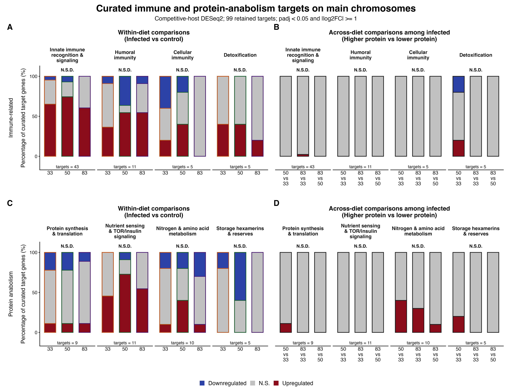
Last updated: 2026-08-16
Checks: 7 0
Knit directory:
gregaria-diet-infection-interaction/
This reproducible R Markdown analysis was created with workflowr (version 1.7.2). The Checks tab describes the reproducibility checks that were applied when the results were created. The Past versions tab lists the development history.
Great! Since the R Markdown file has been committed to the Git repository, you know the exact version of the code that produced these results.
Great job! The global environment was empty. Objects defined in the global environment can affect the analysis in your R Markdown file in unknown ways. For reproduciblity it’s best to always run the code in an empty environment.
The command set.seed(20260427) was run prior to running
the code in the R Markdown file. Setting a seed ensures that any results
that rely on randomness, e.g. subsampling or permutations, are
reproducible.
Great job! Recording the operating system, R version, and package versions is critical for reproducibility.
Nice! There were no cached chunks for this analysis, so you can be confident that you successfully produced the results during this run.
Great job! Using relative paths to the files within your workflowr project makes it easier to run your code on other machines.
Great! You are using Git for version control. Tracking code development and connecting the code version to the results is critical for reproducibility.
The results in this page were generated with repository version e67684d. See the Past versions tab to see a history of the changes made to the R Markdown and HTML files.
Note that you need to be careful to ensure that all relevant files for
the analysis have been committed to Git prior to generating the results
(you can use wflow_publish or
wflow_git_commit). workflowr only checks the R Markdown
file, but you know if there are other scripts or data files that it
depends on. Below is the status of the Git repository when the results
were generated:
Ignored files:
Ignored: analysis/output/
Ignored: data/GO_Annotations
Ignored: data/external
Ignored: data/raw_read_counts
Ignored: data/reference
Ignored: data/scaffold_origin
Ignored: output/manual-validation/
Ignored: output/rmd_runs
Ignored: output/runs
Ignored: outputs
Note that any generated files, e.g. HTML, png, CSS, etc., are not included in this status report because it is ok for generated content to have uncommitted changes.
These are the previous versions of the repository in which changes were
made to the R Markdown
(analysis/08-publication-figures.Rmd) and HTML
(docs/08-publication-figures.html) files. If you’ve
configured a remote Git repository (see ?wflow_git_remote),
click on the hyperlinks in the table below to view the files as they
were in that past version.
| File | Version | Author | Date | Message |
|---|---|---|---|---|
| html | 949289c | Maeva TECHER | 2026-08-16 | Prepare warning-free workflowR release |
| Rmd | 1bc8d16 | Maeva TECHER | 2026-08-11 | changes layout |
| html | 1bc8d16 | Maeva TECHER | 2026-08-11 | changes layout |
| Rmd | b30a02b | Maeva TECHER | 2026-08-11 | update figures |
| html | b30a02b | Maeva TECHER | 2026-08-11 | update figures |
| Rmd | bdea9ec | Maeva TECHER | 2026-08-10 | update list |
| html | bdea9ec | Maeva TECHER | 2026-08-10 | update list |
| Rmd | 20984df | Maeva TECHER | 2026-08-10 | remove 1044 as bad mapping |
| html | 20984df | Maeva TECHER | 2026-08-10 | remove 1044 as bad mapping |
| Rmd | 8b8101c | Maeva TECHER | 2026-08-09 | fixing sample misassignement and missing library |
| html | 8b8101c | Maeva TECHER | 2026-08-09 | fixing sample misassignement and missing library |
| Rmd | de5edfb | Maeva TECHER | 2026-08-07 | update |
| html | de5edfb | Maeva TECHER | 2026-08-07 | update |
| Rmd | e77f7a5 | Maeva TECHER | 2026-08-07 | update last results |
| html | e77f7a5 | Maeva TECHER | 2026-08-07 | update last results |
| Rmd | 0942a37 | Maeva TECHER | 2026-08-07 | update publication |
| html | 0942a37 | Maeva TECHER | 2026-08-07 | update publication |
| html | ffab67e | Maeva TECHER | 2026-08-06 | update homology |
| Rmd | 6ca3fd4 | Maeva TECHER | 2026-08-06 | adding flag scaffolds genes |
| html | 6ca3fd4 | Maeva TECHER | 2026-08-06 | adding flag scaffolds genes |
| html | a9ad296 | Maeva TECHER | 2026-08-06 | figures 4 updates |
| Rmd | 8bf952b | Maeva TECHER | 2026-08-06 | make sure exons+transcript properly added |
| Rmd | 8faef87 | Maeva TECHER | 2026-08-06 | adding pages |
| html | 8faef87 | Maeva TECHER | 2026-08-06 | adding pages |
| Rmd | 9779d0d | Maeva TECHER | 2026-08-06 | reformat the pages |
| Rmd | 5ebe940 | Maeva TECHER | 2026-08-06 | changes analysis |
| html | 5ebe940 | Maeva TECHER | 2026-08-06 | changes analysis |
| Rmd | ea28407 | Maeva TECHER | 2026-07-24 | update deg list |
| html | ea28407 | Maeva TECHER | 2026-07-24 | update deg list |
| html | 1b24ec2 | Maeva TECHER | 2026-07-16 | adding phase related changes |
| html | bceb79b | Maeva TECHER | 2026-07-04 | update outliers removal |
| html | fb64139 | Maeva TECHER | 2026-07-03 | fixed the repo broken link |
| html | 4de8698 | Maeva TECHER | 2026-07-03 | update html |
| Rmd | 4ef2181 | Maeva TECHER | 2026-07-03 | Upgrading analysis and figures DEGs |
| html | 4ef2181 | Maeva TECHER | 2026-07-03 | Upgrading analysis and figures DEGs |
This page rebuilds the established publication figure set using only
genes classified as Nuclear chromosome by the official
assembly-derived placement table. The 44-library analysis cohort
excludes QC outlier 1044, annotated rRNA loci are excluded, and
expression counts come from the fresh competitive host-pathogen mapping.
Unplaced-scaffold results remain on the audit page and are not mixed
into these primary paper figures.
Every knit writes to a new folder under output/rmd_runs,
so previous figure drafts remain available for comparison.
Step 1 - Verify inputs
Confirm the count definition, sample set, placement table, and source reports.
Step 2 - Assemble panels
Copy or rebuild each panel from its analysis page without changing the statistics.
Step 3 - Export
Write publication-ready PNG, SVG, PDF, and source-table files together.
knitr::opts_chunk$set(message = FALSE, warning = FALSE)
publication_default_params <- list(
metadata_file = "data/metadata/mehreen_metadata_analysis_44_excluding_1044.txt",
counts_file = paste0(
"output/rmd_runs/transcript-exon-primary-excluding1044_20260809-233420/",
"host_counts_no_rrna.tsv"
),
placement_file = paste0(
"output/runs/host_pathogen_dual_20260727_000952/local-analysis/",
"host-mapping-audit_20260729-163928/unified-model/audit-summary/",
"host_gene_sequence_placement.tsv"
),
rrna_file = "data/excluded_loci/gregaria_rrna_list.txt",
gff_file = "data/reference/GCF_023897955.1_iqSchGreg1.2_genomic.gff",
eggnog_file = paste0(
"data/GO_Annotations/",
"GCF_023897955.1_iqSchGreg1.2_Arthopoda_one2one.emapper.annotations"
),
manual_candidate_file = paste0(
"data/external/curated_target_genes/",
"2026-08-09_Immune_Protein_Anabolism_DEGs_v24.xlsx"
),
latest_results_root = "output/rmd_runs",
primary_results_pattern = "^placed-unplaced-scaffold-analysis_",
cluster_results_pattern = "^main-chromosome-cluster-enrichment_",
curated_results_pattern = "^curated-target-gene-figure_",
min_total_count = 10,
min_count = 10,
min_samples = 3,
alpha = 0.05,
lfc_threshold = 1,
output_tag = "publication-figures"
)
# R Markdown supplies params while knitting. These defaults make Run All Chunks
# behave the same way in an interactive RStudio session.
if (!exists("params", inherits = TRUE) || !is.list(params)) {
publication_params <- publication_default_params
} else {
publication_params <- utils::modifyList(publication_default_params, params)
}
path_ancestors <- function(path) {
path <- normalizePath(path, mustWork = FALSE)
ancestors <- path
repeat {
parent <- dirname(path)
if (identical(parent, path)) break
ancestors <- c(ancestors, parent)
path <- parent
}
ancestors
}
is_publication_project <- function(path) {
file.exists(file.path(path, "analysis", "08-publication-figures.Rmd")) &&
dir.exists(file.path(path, "data")) &&
dir.exists(file.path(path, "output"))
}
find_publication_project <- function() {
starts <- character()
explicit_root <- Sys.getenv("GREGARIA_DIET_PROJECT_DIR", unset = "")
if (nzchar(explicit_root)) starts <- c(starts, explicit_root)
input_file <- tryCatch(knitr::current_input(dir = TRUE),
error = function(e) "")
if (length(input_file) == 1 && nzchar(input_file)) {
starts <- c(starts, dirname(input_file))
}
if (requireNamespace("rstudioapi", quietly = TRUE) &&
rstudioapi::isAvailable()) {
active_file <- tryCatch(
rstudioapi::getSourceEditorContext()$path,
error = function(e) ""
)
if (length(active_file) == 1 && nzchar(active_file)) {
starts <- c(starts, dirname(active_file))
}
}
starts <- unique(c(starts, getwd()))
candidates <- unique(unlist(lapply(starts, path_ancestors), use.names = FALSE))
matches <- candidates[vapply(candidates, is_publication_project, logical(1))]
if (length(matches) == 0) {
stop(
"Could not locate gregaria-diet-infection-interaction. ",
"Open this Rmd from that project, set the RStudio working directory to ",
"the repository root, or set GREGARIA_DIET_PROJECT_DIR explicitly."
)
}
normalizePath(matches[1], mustWork = TRUE)
}
required <- c("DESeq2", "SummarizedExperiment", "dplyr", "tidyr", "tibble", "stringr",
"ggplot2", "ggrepel", "patchwork", "scales",
"ggVennDiagram", "UpSetR", "ggplotify", "cowplot", "png", "grid", "readxl")
missing <- required[!vapply(required, requireNamespace, logical(1), quietly = TRUE)]
if (length(missing) > 0) {
stop("Install required packages before knitting: ", paste(missing, collapse = ", "))
}
library(ggplot2)
library(patchwork)
project_dir <- find_publication_project()
run_stamp <- format(Sys.time(), "%Y%m%d-%H%M%S")
out_dir <- file.path(project_dir, "output", "rmd_runs",
paste(publication_params$output_tag, run_stamp, sep = "_"))
dir.create(out_dir, recursive = TRUE, showWarnings = FALSE)
results_root <- file.path(project_dir, publication_params$latest_results_root)
metadata_file <- file.path(project_dir, publication_params$metadata_file)
counts_file <- file.path(project_dir, publication_params$counts_file)
placement_file <- file.path(project_dir, publication_params$placement_file)
rrna_file <- file.path(project_dir, publication_params$rrna_file)
gff_file <- file.path(project_dir, publication_params$gff_file)
eggnog_file <- file.path(project_dir, publication_params$eggnog_file)
manual_candidate_file <- file.path(
project_dir,
publication_params$manual_candidate_file
)
diet_colors <- c("33" = "#E6862E", "50" = "#2F8F5B", "83" = "#7B4FA3")
treatment_colors <- c("Control" = "#FAEBD7", "Infected" = "#8B0000")
condition_colors <- c(
"33 Control" = "#F7D6A6",
"33 Infected" = "#C75C1B",
"50 Control" = "#CDE8D5",
"50 Infected" = "#1F6F43",
"83 Control" = "#D8C7E8",
"83 Infected" = "#5B2E83"
)
direction_biotype_colors <- c(
"Upregulated - Coding genes" = "#B91C1C",
"Upregulated - Long non-coding RNA" = "#F87171",
"Upregulated - Other / unknown" = "#FCA5A5",
"Downregulated - Coding genes" = "#1D4ED8",
"Downregulated - Long non-coding RNA" = "#60A5FA",
"Downregulated - Other / unknown" = "#BFDBFE"
)
physiology_theme_colors <- c(
"Phase-related changes" = "#C51B7D",
"Antimicrobial peptides" = "#D7191C",
"Immune-related" = "#F58220",
"Glycogen synthesis / storage" = "#FFD92F",
"Lipid synthesis / metabolism" = "#1B9E77",
"Protein synthesis / storage" = "#377EB8",
"Detoxification / stress" = "#984EA3",
"Other / unannotated genes" = "#BDBDBD"
)
theme_pub <- function(base_size = 12) {
ggplot2::theme_classic(base_size = base_size) +
ggplot2::theme(
plot.title = ggplot2::element_text(face = "bold"),
strip.background = ggplot2::element_rect(fill = "#F3F4F6",
color = "#111827"),
strip.text = ggplot2::element_text(face = "bold"),
legend.position = "bottom",
legend.title = ggplot2::element_text(face = "bold")
)
}latest_dir <- function(pattern) {
dirs <- list.dirs(results_root, recursive = FALSE, full.names = TRUE)
dirs <- dirs[grepl(pattern, basename(dirs))]
if (length(dirs) == 0) return(NA_character_)
dirs[which.max(file.info(dirs)$mtime)]
}
save_png_svg <- function(plot, file_base, width, height, dpi = 300) {
png_path <- file.path(out_dir, paste0(file_base, ".png"))
svg_path <- file.path(out_dir, paste0(file_base, ".svg"))
ggplot2::ggsave(png_path, plot, width = width, height = height,
dpi = dpi, limitsize = FALSE)
grDevices::svg(svg_path, width = width, height = height, onefile = FALSE)
on.exit(grDevices::dev.off(), add = TRUE)
print(plot)
invisible(c(png = png_path, svg = svg_path))
}
parse_gff_gene_annotation <- function(path) {
gff <- read.delim(path, comment.char = "#", header = FALSE, sep = "\t",
quote = "", stringsAsFactors = FALSE)
names(gff)[1:9] <- c("seqid", "source", "type", "start", "end", "score",
"strand", "phase", "attributes")
gff |>
dplyr::filter(type == "gene") |>
dplyr::transmute(
gene_id = dplyr::coalesce(
stringr::str_match(attributes, "gene=([^;]+)")[, 2],
stringr::str_match(attributes, "Name=([^;]+)")[, 2]
),
Description = stringr::str_match(attributes, "description=([^;]+)")[, 2],
gene_biotype = stringr::str_match(attributes, "gene_biotype=([^;]+)")[, 2]
) |>
dplyr::filter(!is.na(gene_id)) |>
dplyr::mutate(
Description = dplyr::if_else(
is.na(Description) | Description == "",
"no GFF description",
utils::URLdecode(Description)
),
gene_biotype = dplyr::coalesce(gene_biotype, "unknown")
) |>
dplyr::distinct(gene_id, .keep_all = TRUE)
}
parse_gff_gene_coordinates <- function(path) {
gff <- read.delim(path, comment.char = "#", header = FALSE, sep = "\t",
quote = "", stringsAsFactors = FALSE)
names(gff)[1:9] <- c("seqid", "source", "type", "start", "end", "score",
"strand", "phase", "attributes")
sequence_regions <- gff |>
dplyr::filter(type == "region") |>
dplyr::transmute(
seqid,
seq_start = start,
seq_end = end,
chromosome = stringr::str_match(attributes, "chromosome=([^;]+)")[, 2],
region_name = stringr::str_match(attributes, "Name=([^;]+)")[, 2],
genome = stringr::str_match(attributes, "genome=([^;]+)")[, 2]
) |>
dplyr::mutate(
chromosome = dplyr::coalesce(chromosome, region_name, seqid),
chromosome = utils::URLdecode(chromosome),
chromosome_class = dplyr::if_else(
chromosome %in% c(as.character(1:11), "X"),
"Named chromosome",
"Unplaced scaffold"
)
) |>
dplyr::distinct(seqid, .keep_all = TRUE)
gene_ranges <- gff |>
dplyr::filter(type == "gene") |>
dplyr::transmute(
seqid,
gene_id = dplyr::coalesce(
stringr::str_match(attributes, "gene=([^;]+)")[, 2],
stringr::str_match(attributes, "Name=([^;]+)")[, 2]
),
start,
end,
midpoint = (start + end) / 2,
strand
) |>
dplyr::filter(!is.na(gene_id)) |>
dplyr::distinct(gene_id, .keep_all = TRUE) |>
dplyr::left_join(sequence_regions, by = "seqid")
list(gene_ranges = gene_ranges, sequence_regions = sequence_regions)
}
first_nonempty <- function(x, fallback = "") {
x <- x[!is.na(x) & x != "" & x != "-"]
if (length(x) == 0) fallback else x[1]
}
read_emapper <- function(path) {
cols <- c(
"query", "seed_ortholog", "evalue", "score", "eggNOG_OGs",
"max_annot_lvl", "COG_category", "eggNOG_Description",
"eggNOG_name", "GOs", "EC", "KEGG_ko", "KEGG_Pathway",
"KEGG_Module", "KEGG_Reaction", "KEGG_rclass", "BRITE",
"KEGG_TC", "CAZy", "BiGG_Reaction", "PFAMs"
)
tab <- read.delim(path, comment.char = "#", header = FALSE, sep = "\t",
quote = "", fill = TRUE)
names(tab) <- cols[seq_len(ncol(tab))]
tab |>
dplyr::mutate(protein_id = stringr::str_extract(query, "XP_[0-9]+[.][0-9]+"))
}
parse_cds_gene_bridge <- function(path) {
gff <- read.delim(path, comment.char = "#", header = FALSE, sep = "\t",
quote = "", stringsAsFactors = FALSE)
names(gff)[1:9] <- c("seqid", "source", "type", "start", "end", "score",
"strand", "phase", "attributes")
gff |>
dplyr::filter(type == "CDS") |>
dplyr::transmute(
protein_id = stringr::str_match(attributes, "protein_id=([^;]+)")[, 2],
gene_id = stringr::str_match(attributes, "gene=([^;]+)")[, 2]
) |>
dplyr::filter(!is.na(protein_id), !is.na(gene_id)) |>
dplyr::distinct()
}
build_gene_annotation <- function(gff_path, eggnog_path) {
gff_annotation <- parse_gff_gene_annotation(gff_path)
eggnog_annotation <- read_emapper(eggnog_path) |>
dplyr::left_join(parse_cds_gene_bridge(gff_path), by = "protein_id") |>
dplyr::filter(!is.na(gene_id)) |>
dplyr::group_by(gene_id) |>
dplyr::summarise(
eggNOG_Description = first_nonempty(eggNOG_Description),
eggNOG_name = first_nonempty(eggNOG_name),
GOs = first_nonempty(GOs),
KEGG_ko = first_nonempty(KEGG_ko),
KEGG_Pathway = first_nonempty(KEGG_Pathway),
PFAMs = first_nonempty(PFAMs),
.groups = "drop"
)
gff_annotation |>
dplyr::full_join(eggnog_annotation, by = "gene_id") |>
dplyr::mutate(
Description = dplyr::coalesce(Description, "no GFF description"),
gene_biotype = dplyr::coalesce(gene_biotype, "unknown"),
annotation_text = stringr::str_squish(paste(
Description, eggNOG_Description, eggNOG_name, PFAMs,
KEGG_Pathway, sep = " | "
))
)
}
classify_physiology_theme <- function(annotation_text) {
text <- stringr::str_to_lower(dplyr::coalesce(annotation_text, ""))
dplyr::case_when(
stringr::str_detect(
text,
"antimicrobial|defensin|attacin|cecropin|diptericin|gloverin|metchnikowin|thaumatin|termicin|lysozyme"
) ~ "Antimicrobial peptides",
stringr::str_detect(
text,
"toll|imd|relish|myd88|cactus|dorsal|nf-kappa|nf kappa|jak|stat"
) ~ "Immune-related",
stringr::str_detect(
text,
"immune|peptidoglycan|pgrp|gram-negative|gram negative|beta-1,3-glucan|glucan binding|phenoloxidase|prophenoloxidase|melanization|lectin|hemocyanin|complement|serpin"
) ~ "Immune-related",
stringr::str_detect(
text,
"glycogen|glycogenin|branching enzyme|starch"
) ~ "Glycogen synthesis / storage",
stringr::str_detect(
text,
"lipid|fatty acid|fatty-acid|acyl-coa|acyl coa|acetyl-coa carboxylase|elongase|desaturase|glycerolipid|phospholipid|triacylglycerol|diacylglycerol|sterol|lipase"
) ~ "Lipid synthesis / metabolism",
stringr::str_detect(
text,
"protein synthesis|translation|ribosom|elongation factor|initiation factor|aminoacyl|trna synthetase|vitellogenin|hexamerin|arylphorin|storage protein"
) ~ "Protein synthesis / storage",
stringr::str_detect(
text,
"detox|cytochrome p450|\\bcyp[0-9a-z]|glutathione|gst|carboxylesterase|esterase|udp-glucuronosyltransferase|\\bugt\\b|abc transporter|oxidoreductase|peroxidase|catalase|superoxide|heat shock|stress"
) ~ "Detoxification / stress",
stringr::str_detect(text, "no gff description|^\\s*$") ~
"Other / unannotated genes",
TRUE ~ "Other / unannotated genes"
)
}
classify_gene_class <- function(gene_biotype) {
dplyr::case_when(
gene_biotype == "protein_coding" ~ "Coding genes",
gene_biotype == "lncRNA" ~ "Long non-coding RNA",
TRUE ~ "Other / unknown"
)
}
make_condition_label <- function(comparison_type, numerator, denominator, diet,
side = c("numerator", "denominator")) {
side <- match.arg(side)
value <- if (side == "numerator") numerator else denominator
dplyr::case_when(
comparison_type == "Infection within diet" ~ paste(value, "diet", diet),
grepl("control", comparison_type, ignore.case = TRUE) ~
paste("Control diet", value),
grepl("infected", comparison_type, ignore.case = TRUE) ~
paste("Infected diet", value),
TRUE ~ value
)
}
make_condition_hull <- function(df) {
if (nrow(df) < 3) return(df[0, ])
df[chull(df$PC1, df$PC2), ]
}
copy_publication_asset <- function(source, file_base) {
if (!file.exists(source)) return(NA_character_)
target <- file.path(out_dir, paste0(file_base, ".", tools::file_ext(source)))
file.copy(source, target, overwrite = TRUE)
target
}Every figure below is regenerated from the same main-chromosome contract. The input table records the exact count matrix, official placement source, and current DESeq2 or cluster output used for each export.
placed_dir <- latest_dir(publication_params$primary_results_pattern)
primary_results_file <- file.path(
placed_dir,
"placed_unplaced_all_deseq2_results.csv"
)
head_phase_file <- file.path(
project_dir,
"data/external/phase_reference/gregaria_head_phase_degs.csv"
)
thorax_phase_file <- file.path(
project_dir,
"data/external/phase_reference/gregaria_thorax_phase_degs.csv"
)
circled_cluster_dir <- latest_dir(publication_params$cluster_results_pattern)
figure3_composite_source <- file.path(
circled_cluster_dir,
"expression_cluster_gene_level_GO_KEGG_pathway_illustration.png"
)
figure3_lollipop_source <- file.path(
circled_cluster_dir,
"expression_cluster_gene_level_GO_KEGG_lollipop.png"
)
figure3_insect_source <- file.path(
circled_cluster_dir,
"expression_cluster_gene_level_GO_KEGG_lollipop_insect_focused.png"
)
figure3_reference_source <- file.path(
circled_cluster_dir,
"expression_cluster_gene_level_GO_KEGG_lollipop_with_references.png"
)
curated_target_dir <- latest_dir(publication_params$curated_results_pattern)
figure4_curated_source <- file.path(
curated_target_dir,
"figure4_curated_targets_main_chromosomes.png"
)
figure4_placement_source <- file.path(
curated_target_dir,
"curated_target_placement_impact.png"
)
figure4_all_scaffolds_source <- file.path(
curated_target_dir,
"figure4_curated_targets_all_scaffolds.png"
)
figure4_homology_flags_source <- file.path(
curated_target_dir,
"figure4_curated_targets_non_grasshopper_homology_flags.png"
)
base_inputs <- c(
metadata_file, counts_file, placement_file, rrna_file, gff_file, eggnog_file,
manual_candidate_file,
primary_results_file, head_phase_file, thorax_phase_file,
figure3_composite_source, figure3_lollipop_source, figure3_insect_source,
figure3_reference_source, figure4_curated_source, figure4_all_scaffolds_source,
figure4_homology_flags_source, figure4_placement_source
)
if (!all(file.exists(base_inputs))) {
stop("Missing publication input(s): ",
paste(base_inputs[!file.exists(base_inputs)], collapse = ", "))
}
placement <- read.delim(placement_file, check.names = FALSE) |>
dplyr::distinct(gene_id, .keep_all = TRUE)
rrna_ids <- trimws(readLines(rrna_file, warn = FALSE))
rrna_ids <- rrna_ids[nzchar(rrna_ids) & !startsWith(rrna_ids, "#")]
main_chromosome_ids <- placement$gene_id[
placement$sequence_class == "Nuclear chromosome" &
!placement$gene_id %in% rrna_ids
]
counts_table <- read.delim(counts_file, check.names = FALSE)
main_chromosome_counts <- as.matrix(
counts_table[
counts_table$gene_id %in% main_chromosome_ids,
setdiff(names(counts_table), "gene_id"),
drop = FALSE
]
)
rownames(main_chromosome_counts) <- counts_table$gene_id[
counts_table$gene_id %in% main_chromosome_ids
]
storage.mode(main_chromosome_counts) <- "integer"
main_chromosome_counts <- main_chromosome_counts[
rowSums(main_chromosome_counts >= publication_params$min_count) >=
publication_params$min_samples,
,
drop = FALSE
]
metadata_for_models <- read.delim(metadata_file, check.names = FALSE)
metadata_for_models <- metadata_for_models[
, !is.na(names(metadata_for_models)) & nzchar(names(metadata_for_models)),
drop = FALSE
]
metadata_for_models$label <- as.character(metadata_for_models$label)
metadata_for_models$Diet <- factor(metadata_for_models$Diet,
levels = c("33", "50", "83"))
metadata_for_models$Treatment <- factor(
metadata_for_models$Treatment,
levels = c("Control", "Infected")
)
metadata_for_models <- metadata_for_models[
match(colnames(main_chromosome_counts), metadata_for_models$label),
,
drop = FALSE
]
if (anyNA(metadata_for_models$label)) {
stop("Fresh competitive counts contain samples missing from metadata.")
}
rownames(metadata_for_models) <- metadata_for_models$label
metadata_for_models$group <- factor(
paste0("diet", metadata_for_models$Diet, "_",
tolower(as.character(metadata_for_models$Treatment))),
levels = c(
"diet33_control", "diet50_control", "diet83_control",
"diet33_infected", "diet50_infected", "diet83_infected"
)
)
direct_contrasts <- tibble::tribble(
~contrast_id, ~comparison_type, ~comparison, ~numerator, ~denominator,
~diet, ~numerator_group, ~denominator_group,
"infection_diet33", "Infection within diet", "Diet 33: infected vs control", "Infected", "Control", "33", "diet33_infected", "diet33_control",
"infection_diet50", "Infection within diet", "Diet 50: infected vs control", "Infected", "Control", "50", "diet50_infected", "diet50_control",
"infection_diet83", "Infection within diet", "Diet 83: infected vs control", "Infected", "Control", "83", "diet83_infected", "diet83_control",
"control_diet33_vs50", "Diet contrasts among control", "Control 33 vs 50", "33", "50", NA_character_, "diet33_control", "diet50_control",
"control_diet83_vs33", "Diet contrasts among control", "Control 83 vs 33", "83", "33", NA_character_, "diet83_control", "diet33_control",
"control_diet83_vs50", "Diet contrasts among control", "Control 83 vs 50", "83", "50", NA_character_, "diet83_control", "diet50_control",
"infected_diet33_vs50", "Diet contrasts among infected", "Infected 33 vs 50", "33", "50", NA_character_, "diet33_infected", "diet50_infected",
"infected_diet83_vs33", "Diet contrasts among infected", "Infected 83 vs 33", "83", "33", NA_character_, "diet83_infected", "diet33_infected",
"infected_diet83_vs50", "Diet contrasts among infected", "Infected 83 vs 50", "83", "50", NA_character_, "diet83_infected", "diet50_infected"
)
primary_results <- read.csv(primary_results_file, check.names = FALSE) |>
dplyr::filter(
mapping_branch == "Competitive host",
analysis_scope == "Placed/host-assigned",
sequence_class == "Nuclear chromosome"
)
all_sample_results <- primary_results |>
dplyr::inner_join(
direct_contrasts |>
dplyr::select(contrast_id, comparison_type, comparison,
numerator_simple = numerator,
denominator_simple = denominator, diet),
by = "contrast_id"
) |>
dplyr::transmute(
scenario = "All samples",
comparison_type, comparison,
numerator = numerator_simple,
denominator = denominator_simple,
diet,
gene_id, baseMean, log2FoldChange, lfcSE, stat, pvalue, padj,
significant = significant & !is.na(padj) &
padj < publication_params$alpha &
abs(log2FoldChange) >= publication_params$lfc_threshold,
direction = dplyr::if_else(log2FoldChange > 0,
"Upregulated", "Downregulated")
)
fit_direct_scenario <- function(excluded_samples, scenario_name) {
keep_samples <- setdiff(colnames(main_chromosome_counts), excluded_samples)
scenario_counts <- main_chromosome_counts[, keep_samples, drop = FALSE]
scenario_counts <- scenario_counts[
rowSums(scenario_counts >= publication_params$min_count) >=
publication_params$min_samples,
,
drop = FALSE
]
scenario_meta <- metadata_for_models[keep_samples, , drop = FALSE]
dds <- DESeq2::DESeqDataSetFromMatrix(
countData = scenario_counts,
colData = data.frame(group = scenario_meta$group,
row.names = scenario_meta$label),
design = ~ 0 + group
)
dds <- DESeq2::DESeq(dds, minReplicatesForReplace = Inf, quiet = TRUE)
dplyr::bind_rows(lapply(seq_len(nrow(direct_contrasts)), function(i) {
spec <- direct_contrasts[i, ]
result <- as.data.frame(DESeq2::results(
dds,
contrast = c("group", spec$numerator_group, spec$denominator_group),
alpha = publication_params$alpha,
cooksCutoff = FALSE
)) |>
tibble::rownames_to_column("gene_id")
result |>
dplyr::transmute(
scenario = scenario_name,
comparison_type = spec$comparison_type,
comparison = spec$comparison,
numerator = spec$numerator,
denominator = spec$denominator,
diet = spec$diet,
gene_id, baseMean, log2FoldChange, lfcSE, stat, pvalue, padj,
significant = !is.na(padj) & padj < publication_params$alpha &
abs(log2FoldChange) >= publication_params$lfc_threshold,
direction = dplyr::if_else(log2FoldChange > 0,
"Upregulated", "Downregulated")
)
}))
}
# The current analysis retains every QC-passed library; only 1044 was removed
# upstream for technical mapping failure.
scenario_results <- all_sample_results
scenario_results_file <- file.path(
out_dir,
"main_chromosome_sample_filter_scenario_results.csv"
)
write.csv(scenario_results, scenario_results_file, row.names = FALSE)
scenario_sample_counts <- metadata_for_models |>
dplyr::count(Diet, Treatment, name = "n_samples") |>
dplyr::mutate(scenario = "All QC-passed samples")
scenario_sample_counts_file <- file.path(
out_dir,
"main_chromosome_sample_counts_by_scenario.csv"
)
write.csv(scenario_sample_counts, scenario_sample_counts_file,
row.names = FALSE)
model_coefficients <- primary_results |>
dplyr::filter(contrast_id == "infection_average_all_diets") |>
dplyr::mutate(coefficient = "Treatment_Infected_vs_Control")
model_coefficients_file <- file.path(
out_dir,
"main_chromosome_average_infection_results.csv"
)
write.csv(model_coefficients, model_coefficients_file, row.names = FALSE)
inputs <- data.frame(
input = c("metadata", "fresh competitive host counts",
"official main-chromosome placement", "rRNA exclusion list",
"GFF annotation", "eggNOG annotation", "manual candidate workbook",
"main-chromosome DESeq2 scenario table",
"sample-filter scenario counts",
"main-chromosome average infection results", "Head phase DEGs",
"Thorax phase DEGs", "Figure 3 composite source"),
path = c(metadata_file, counts_file, placement_file, rrna_file,
gff_file, eggnog_file, manual_candidate_file,
scenario_results_file, scenario_sample_counts_file,
model_coefficients_file,
head_phase_file, thorax_phase_file, figure3_composite_source),
present = c(file.exists(metadata_file), file.exists(counts_file),
file.exists(placement_file), file.exists(rrna_file),
file.exists(gff_file), file.exists(eggnog_file),
file.exists(manual_candidate_file),
file.exists(scenario_results_file),
file.exists(scenario_sample_counts_file),
file.exists(model_coefficients_file),
file.exists(head_phase_file), file.exists(thorax_phase_file),
file.exists(figure3_composite_source))
)
knitr::kable(inputs, caption = "Inputs used to assemble publication figures")| input | path | present |
|---|---|---|
| metadata | /Users/maevatecher/Documents/GitHub/gregaria-diet-infection-interaction/data/metadata/mehreen_metadata_analysis_44_excluding_1044.txt | TRUE |
| fresh competitive host counts | /Users/maevatecher/Documents/GitHub/gregaria-diet-infection-interaction/output/rmd_runs/transcript-exon-primary-excluding1044_20260809-233420/host_counts_no_rrna.tsv | TRUE |
| official main-chromosome placement | /Users/maevatecher/Documents/GitHub/gregaria-diet-infection-interaction/output/runs/host_pathogen_dual_20260727_000952/local-analysis/host-mapping-audit_20260729-163928/unified-model/audit-summary/host_gene_sequence_placement.tsv | TRUE |
| rRNA exclusion list | /Users/maevatecher/Documents/GitHub/gregaria-diet-infection-interaction/data/excluded_loci/gregaria_rrna_list.txt | TRUE |
| GFF annotation | /Users/maevatecher/Documents/GitHub/gregaria-diet-infection-interaction/data/reference/GCF_023897955.1_iqSchGreg1.2_genomic.gff | TRUE |
| eggNOG annotation | /Users/maevatecher/Documents/GitHub/gregaria-diet-infection-interaction/data/GO_Annotations/GCF_023897955.1_iqSchGreg1.2_Arthopoda_one2one.emapper.annotations | TRUE |
| manual candidate workbook | /Users/maevatecher/Documents/GitHub/gregaria-diet-infection-interaction/data/external/curated_target_genes/2026-08-09_Immune_Protein_Anabolism_DEGs_v24.xlsx | TRUE |
| main-chromosome DESeq2 scenario table | /Users/maevatecher/Documents/GitHub/gregaria-diet-infection-interaction/output/rmd_runs/publication-figures_20260816-214113/main_chromosome_sample_filter_scenario_results.csv | TRUE |
| sample-filter scenario counts | /Users/maevatecher/Documents/GitHub/gregaria-diet-infection-interaction/output/rmd_runs/publication-figures_20260816-214113/main_chromosome_sample_counts_by_scenario.csv | TRUE |
| main-chromosome average infection results | /Users/maevatecher/Documents/GitHub/gregaria-diet-infection-interaction/output/rmd_runs/publication-figures_20260816-214113/main_chromosome_average_infection_results.csv | TRUE |
| Head phase DEGs | /Users/maevatecher/Documents/GitHub/gregaria-diet-infection-interaction/data/external/phase_reference/gregaria_head_phase_degs.csv | TRUE |
| Thorax phase DEGs | /Users/maevatecher/Documents/GitHub/gregaria-diet-infection-interaction/data/external/phase_reference/gregaria_thorax_phase_degs.csv | TRUE |
| Figure 3 composite source | /Users/maevatecher/Documents/GitHub/gregaria-diet-infection-interaction/output/rmd_runs/main-chromosome-cluster-enrichment_20260816-211927/expression_cluster_gene_level_GO_KEGG_pathway_illustration.png | TRUE |
if (!all(inputs$present)) {
stop("One or more publication figure inputs are missing.")
}The design summary remains available as a separate export but is not included in the numbered Figure 1 composite.
metadata <- read.delim(metadata_file, check.names = FALSE)
metadata <- metadata[, !is.na(names(metadata)) & nzchar(names(metadata)),
drop = FALSE]
metadata$label <- as.character(metadata$label)
metadata$Diet <- factor(metadata$Diet, levels = c("33", "50", "83"))
metadata$Treatment <- factor(metadata$Treatment,
levels = c("Control", "Infected"))
design_counts <- metadata |>
dplyr::count(Diet, Treatment, name = "n_samples") |>
tidyr::complete(Diet, Treatment, fill = list(n_samples = 0)) |>
dplyr::mutate(
Condition = paste(Diet, Treatment),
label = paste0("Diet ", Diet, "\n", Treatment, "\nn = ", n_samples),
text_color = dplyr::if_else(Treatment == "Infected", "white", "#111827")
)
p_design <- ggplot2::ggplot(
design_counts,
ggplot2::aes(x = Treatment, y = Diet, fill = Condition)
) +
ggplot2::geom_tile(width = 0.84, height = 0.72, color = "#111827",
linewidth = 0.45) +
ggplot2::geom_text(
ggplot2::aes(label = label, color = text_color),
lineheight = 0.88,
size = 3.6,
fontface = "bold"
) +
ggplot2::annotate(
"label",
x = 1.5, y = 4.18,
label = paste(
"Female S. gregaria fat body RNA-seq",
"96 h after control or Metarhizium challenge",
"all analysis-cohort samples retained; rRNA loci removed bioinformatically",
sep = "\n"
),
label.size = 0.25,
fill = "white",
color = "#111827",
size = 3.5,
fontface = "bold",
lineheight = 0.96
) +
ggplot2::scale_fill_manual(values = condition_colors, drop = FALSE) +
ggplot2::scale_color_identity() +
ggplot2::scale_y_discrete(limits = rev(levels(metadata$Diet))) +
ggplot2::coord_cartesian(clip = "off", ylim = c(0.55, 4.45)) +
theme_pub(base_size = 12) +
ggplot2::theme(
axis.title = ggplot2::element_blank(),
axis.text.x = ggplot2::element_text(face = "bold", size = 12),
axis.text.y = ggplot2::element_text(face = "bold", size = 12),
axis.ticks = ggplot2::element_blank(),
legend.position = "none",
plot.margin = ggplot2::margin(8, 8, 8, 8)
) +
ggplot2::labs(title = "Experimental design")
save_png_svg(p_design, "experimental_design_standalone",
width = 7.2, height = 4.6)
p_design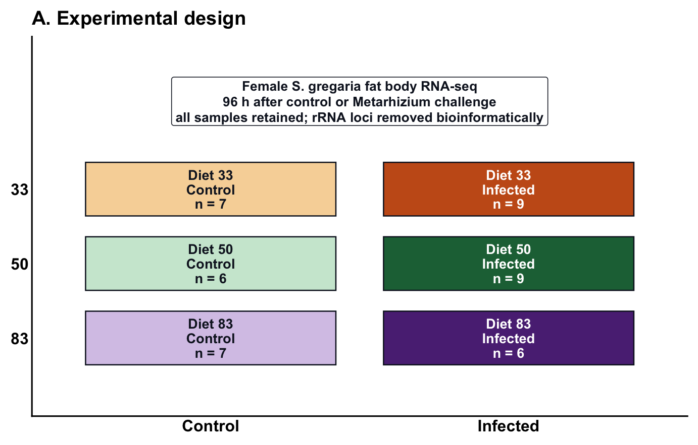
Figure 1 shows the VST PCA from all expressed, chromosome-assigned, rRNA-filtered genes. Pale hulls show the spread of each diet-by-treatment group. Sample color identifies diet, shape identifies treatment, and the hollow centroids are connected within each diet to show the control-to-infected shift.
counts <- main_chromosome_counts
count_labels_all <- colnames(counts)
keep_samples <- count_labels_all %in% metadata$label
counts <- counts[, keep_samples, drop = FALSE]
count_labels <- count_labels_all[keep_samples]
metadata_ordered <- metadata[match(count_labels, metadata$label), ]
stopifnot(identical(metadata_ordered$label, count_labels))
rownames(metadata_ordered) <- metadata_ordered$label
colnames(counts) <- count_labels
keep_vst <- rowSums(counts) >= publication_params$min_total_count
dds_vst <- DESeq2::DESeqDataSetFromMatrix(
countData = counts[keep_vst, , drop = FALSE],
colData = metadata_ordered,
design = ~ Diet + Treatment
)
vsd <- DESeq2::vst(dds_vst, blind = TRUE)
vst_mat <- SummarizedExperiment::assay(vsd)
nonzero_variance <- apply(vst_mat, 1, var) > 0
pca <- prcomp(t(vst_mat[nonzero_variance, , drop = FALSE]), scale. = FALSE)
percent_var <- round(100 * (pca$sdev^2 / sum(pca$sdev^2)), 1)
pca_scores <- data.frame(
label = rownames(pca$x),
PC1 = pca$x[, "PC1"],
PC2 = pca$x[, "PC2"],
Diet = metadata_ordered$Diet,
Treatment = metadata_ordered$Treatment,
check.names = FALSE
)
pca_scores$Condition <- factor(
paste(pca_scores$Diet, pca_scores$Treatment),
levels = names(condition_colors)
)
pca_centroids <- aggregate(cbind(PC1, PC2) ~ Diet + Treatment + Condition,
pca_scores, mean)
pca_centroids$centroid_label <- paste(
pca_centroids$Diet,
pca_centroids$Treatment
)
pca_hulls <- do.call(rbind, lapply(split(pca_scores, pca_scores$Condition),
make_condition_hull))
centroid_shift <- merge(
pca_centroids[pca_centroids$Treatment == "Control",
c("Diet", "PC1", "PC2")],
pca_centroids[pca_centroids$Treatment == "Infected",
c("Diet", "PC1", "PC2")],
by = "Diet",
suffixes = c("_control", "_infected")
)
p_pca <- ggplot2::ggplot() +
ggplot2::geom_polygon(
data = pca_hulls,
ggplot2::aes(x = PC1, y = PC2, fill = Condition, group = Condition),
alpha = 0.18,
color = NA
) +
ggplot2::geom_point(
data = pca_scores,
ggplot2::aes(x = PC1, y = PC2, color = Diet, shape = Treatment),
size = 5,
stroke = 0.2,
alpha = 0.9
) +
ggplot2::geom_segment(
data = centroid_shift,
ggplot2::aes(x = PC1_control, y = PC2_control,
xend = PC1_infected, yend = PC2_infected,
color = Diet),
linewidth = 0.8,
arrow = grid::arrow(length = grid::unit(0.16, "cm"), type = "closed")
) +
ggplot2::geom_point(
data = pca_centroids,
ggplot2::aes(x = PC1, y = PC2, color = Diet),
shape = 21,
fill = "white",
stroke = 1.2,
size = 5
) +
ggrepel::geom_label_repel(
data = pca_centroids,
ggplot2::aes(
x = PC1, y = PC2, label = centroid_label,
color = Diet
),
fill = "white",
label.size = 0.25,
label.padding = grid::unit(0.18, "lines"),
box.padding = 0.45,
point.padding = 0.55,
min.segment.length = 0,
segment.color = "#4B5563",
segment.size = 0.3,
size = 5,
show.legend = FALSE,
seed = 20260807
) +
ggplot2::scale_fill_manual(values = condition_colors, drop = FALSE) +
ggplot2::scale_color_manual(values = diet_colors, drop = FALSE) +
ggplot2::scale_shape_manual(values = c("Control" = 16, "Infected" = 17)) +
theme_pub(base_size = 12) +
ggplot2::theme(
legend.position = "bottom",
legend.box = "vertical",
legend.text = ggplot2::element_text(size = 11.5),
legend.title = ggplot2::element_text(size = 12, face = "bold"),
axis.title = ggplot2::element_text(size = 18),
axis.text = ggplot2::element_text(size = 14, color = "#111827"),
panel.grid = ggplot2::element_blank()
) +
ggplot2::guides(
fill = ggplot2::guide_legend(
nrow = 2, title.position = "top", order = 3,
override.aes = list(alpha = 0.22, color = NA)
),
color = ggplot2::guide_legend(
nrow = 1, title.position = "top", order = 2,
override.aes = list(shape = 21, fill = "white", size = 4.2)
),
shape = ggplot2::guide_legend(
nrow = 1, title.position = "top", order = 1,
override.aes = list(color = "#111827", size = 3.8)
)
) +
ggplot2::labs(
title = "VST PCA with diet-by-treatment centroids",
x = paste0("PC1: ", percent_var[1], "% variance"),
y = paste0("PC2: ", percent_var[2], "% variance"),
fill = "Condition polygon",
color = "Diet",
shape = "Treatment"
)
write.csv(pca_scores, file.path(out_dir, "figure1_pca_scores.csv"),
row.names = FALSE)
write.csv(pca_centroids, file.path(out_dir, "figure1_pca_centroids.csv"),
row.names = FALSE)
write.csv(centroid_shift, file.path(out_dir,
"figure1_pca_centroid_shifts.csv"),
row.names = FALSE)
save_png_svg(p_pca, "figure1_fatbody_pca_centroid_shifts",
width = 10.2, height = 7.2)
p_pca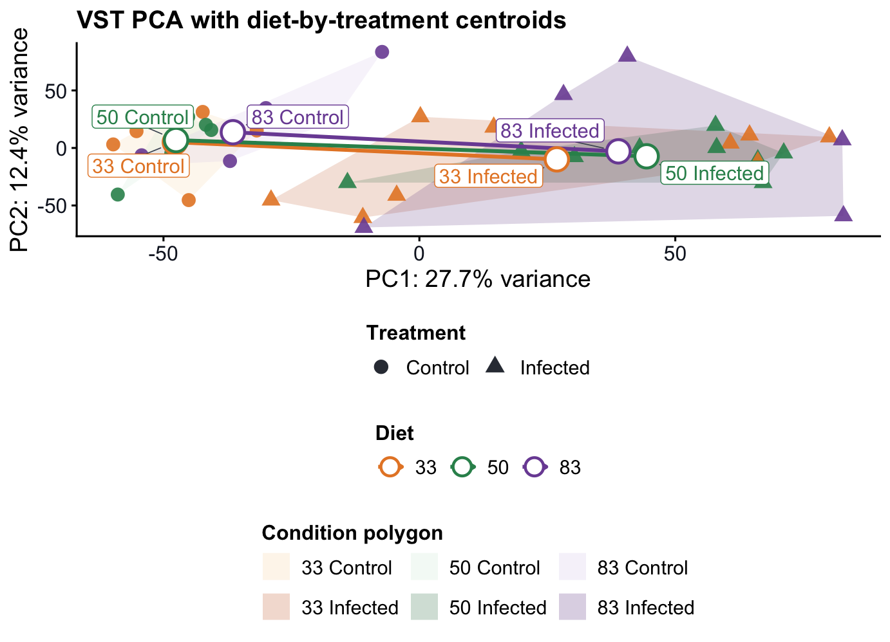
Panel A reports the complete directional DEG burden for every primary contrast. Panel B compares infection-response DEGs called independently in diets 33, 50, and 83, making shared and diet-specific responses directly visible. Venn membership ignores direction.
Panel C asks whether temporary semi-isolation, which was required by the infection protocol, introduced an early density-dependent expression response that could partly confound the diet-by-infection analysis. This question was motivated by the strong expression of some DEG groups in only a few individuals. The union of the infection-within-diet DEGs is compared with independent solitarious-versus-gregarious DEG sets from head and thorax. The reference study also used female final-instar S. gregaria sampled three days post-molt and the same total-RNA, rRNA-depletion library-preparation workflow. This matching reduces differences attributable to sex, developmental stage, and library preparation, although the tissues and experiments remain distinct.
Genes shared with both head and thorax provide the most conservative evidence that a broader cross-tissue phase-associated response could contribute to the apparent infection signal. Genes shared with only one reference tissue provide weaker, tissue-dependent evidence of potential confounding. These genes may respond to infection, reduced social density, or both, and the overlap cannot separate those causes. Genes absent from both sets lack phase-reference support, but are not automatically infection-specific because the independent phase study did not include fat body. The comparison is therefore interpretive and cannot establish that the experimental animals underwent a phase transition. Every set in these panels is restricted to genes on the official nuclear chromosomes. The broader four-context Venn is retained as a standalone alternative export.
gene_biotypes <- parse_gff_gene_annotation(gff_file)
scenario_degs_for_barplot <- read.csv(scenario_results_file, check.names = FALSE) |>
dplyr::filter(
scenario == "All samples",
significant,
!is.na(gene_id),
!is.na(padj),
padj < publication_params$alpha,
abs(log2FoldChange) >= publication_params$lfc_threshold
)
model_degs_for_barplot <- read.csv(model_coefficients_file,
check.names = FALSE) |>
dplyr::filter(
coefficient == "Treatment_Infected_vs_Control",
significant,
!is.na(gene_id),
!is.na(padj),
padj < publication_params$alpha,
abs(log2FoldChange) >= publication_params$lfc_threshold
)
deg_raw <- dplyr::bind_rows(
scenario_degs_for_barplot |>
dplyr::transmute(
DEG_context = dplyr::case_when(
comparison_type == "Infection within diet" ~
"Infection within diets",
comparison_type == "Diet contrasts among control" ~
"Diet DEGs in controls",
comparison_type == "Diet contrasts among infected" ~
"Diet DEGs in infected",
TRUE ~ comparison_type
),
comparison_type,
comparison,
numerator,
denominator,
diet = as.character(diet),
gene_id,
log2FoldChange
),
model_degs_for_barplot |>
dplyr::transmute(
DEG_context = "Infection vs control",
comparison_type = "Infection vs control",
comparison = "All diets: infected vs control",
numerator = "Infected",
denominator = "Control",
diet = NA_character_,
gene_id,
log2FoldChange
)
)
context_order <- c(
"Infection vs control",
"Infection within diets",
"Diet DEGs in controls",
"Diet DEGs in infected"
)
contrast_order <- c(
"All diets\ninfected vs control",
"Diet 83\ninfected vs control",
"Diet 50\ninfected vs control",
"Diet 33\ninfected vs control",
"Control\n83 vs 50",
"Control\n83 vs 33",
"Control\n33 vs 50",
"Infected\n83 vs 50",
"Infected\n83 vs 33",
"Infected\n33 vs 50"
)
deg_biotype_counts <- deg_raw |>
dplyr::mutate(
signed_direction = dplyr::if_else(log2FoldChange > 0,
"Upregulated", "Downregulated"),
numerator_condition = make_condition_label(
comparison_type, numerator, denominator, diet, "numerator"
),
denominator_condition = make_condition_label(
comparison_type, numerator, denominator, diet, "denominator"
),
higher_in = dplyr::if_else(log2FoldChange > 0,
numerator_condition, denominator_condition),
contrast_label = dplyr::case_when(
DEG_context == "Infection within diets" ~
paste0("Diet ", diet, "\ninfected vs control"),
DEG_context == "Diet DEGs in controls" ~
paste0("Control\n", numerator, " vs ", denominator),
DEG_context == "Diet DEGs in infected" ~
paste0("Infected\n", numerator, " vs ", denominator),
DEG_context == "Infection vs control" ~
"All diets\ninfected vs control",
TRUE ~ comparison
)
) |>
dplyr::left_join(gene_biotypes, by = "gene_id") |>
dplyr::mutate(
Gene_class = classify_gene_class(gene_biotype),
DEG_context = factor(DEG_context, levels = context_order),
contrast_label = factor(contrast_label, levels = contrast_order),
signed_direction = factor(signed_direction,
levels = c("Downregulated", "Upregulated")),
direction_class = paste(signed_direction, Gene_class, sep = " - ")
) |>
dplyr::distinct(DEG_context, comparison, contrast_label, signed_direction,
gene_id, Gene_class, .keep_all = TRUE) |>
dplyr::count(DEG_context, comparison, contrast_label,
signed_direction, Gene_class,
direction_class, name = "n_DEGs") |>
dplyr::group_by(DEG_context, comparison, contrast_label, signed_direction) |>
tidyr::complete(
Gene_class = c("Coding genes", "Long non-coding RNA", "Other / unknown"),
fill = list(n_DEGs = 0)
) |>
dplyr::ungroup() |>
dplyr::filter(!is.na(DEG_context), !is.na(contrast_label)) |>
dplyr::mutate(
direction_class = paste(signed_direction, Gene_class, sep = " - "),
signed_n = dplyr::if_else(signed_direction == "Upregulated",
n_DEGs, -n_DEGs)
)
deg_total_labels <- deg_biotype_counts |>
dplyr::group_by(DEG_context, comparison, contrast_label, signed_direction) |>
dplyr::summarise(total_DEGs = sum(n_DEGs), .groups = "drop") |>
dplyr::mutate(
signed_total = dplyr::if_else(signed_direction == "Upregulated",
total_DEGs, -total_DEGs)
)
context_max <- deg_total_labels |>
dplyr::group_by(DEG_context) |>
dplyr::summarise(max_total = max(abs(signed_total), 1),
.groups = "drop")
deg_total_labels <- deg_total_labels |>
dplyr::left_join(context_max, by = "DEG_context") |>
dplyr::filter(total_DEGs > 0) |>
dplyr::mutate(
label_x = signed_total + dplyr::if_else(
signed_total > 0,
max_total * 0.025,
-max_total * 0.025
),
hjust = dplyr::if_else(signed_total > 0, 0, 1)
)
p_deg_biotype <- ggplot2::ggplot(
deg_biotype_counts,
ggplot2::aes(x = signed_n, y = contrast_label, fill = direction_class)
) +
ggplot2::geom_vline(xintercept = 0, linewidth = 0.35, color = "#111827") +
ggplot2::geom_col(width = 0.74, color = "white", linewidth = 0.2) +
ggplot2::geom_text(
data = deg_total_labels,
ggplot2::aes(x = label_x, y = contrast_label, label = total_DEGs,
hjust = hjust),
inherit.aes = FALSE,
size = 6,
fontface = "bold"
) +
ggplot2::facet_wrap(~ DEG_context, ncol = 2, scales = "free") +
ggplot2::scale_fill_manual(values = direction_biotype_colors, drop = FALSE) +
ggplot2::scale_x_continuous(
labels = abs,
expand = ggplot2::expansion(mult = c(0.22, 0.22))
) +
theme_pub(base_size = 16) +
ggplot2::theme(
axis.title.y = ggplot2::element_blank(),
axis.text.y = ggplot2::element_text(size = 15.5, face = "bold"),
axis.text.x = ggplot2::element_text(size = 13.5),
axis.title.x = ggplot2::element_text(size = 15, face = "bold"),
strip.text = ggplot2::element_text(size = 16, face = "bold"),
panel.spacing = grid::unit(0.55, "lines"),
legend.position = "bottom",
legend.title = ggplot2::element_text(size = 13.5, face = "bold"),
legend.text = ggplot2::element_text(size = 12),
plot.margin = ggplot2::margin(6, 28, 6, 6)
) +
ggplot2::guides(
fill = ggplot2::guide_legend(nrow = 3, title.position = "top",
byrow = TRUE)
) +
ggplot2::labs(
x = "Number of significant DEGs",
fill = "Direction and gene class"
)
write.csv(deg_biotype_counts,
file.path(out_dir, "figure2_panel_A_deg_biotype_counts.csv"),
row.names = FALSE)
write.csv(deg_raw,
file.path(out_dir, "figure2_panel_A_exact_contrast_deg_gene_table.csv"),
row.names = FALSE)
save_png_svg(p_deg_biotype, "figure2_panel_A_deg_biotype_burden",
width = 11.2, height = 8.4)
p_deg_biotype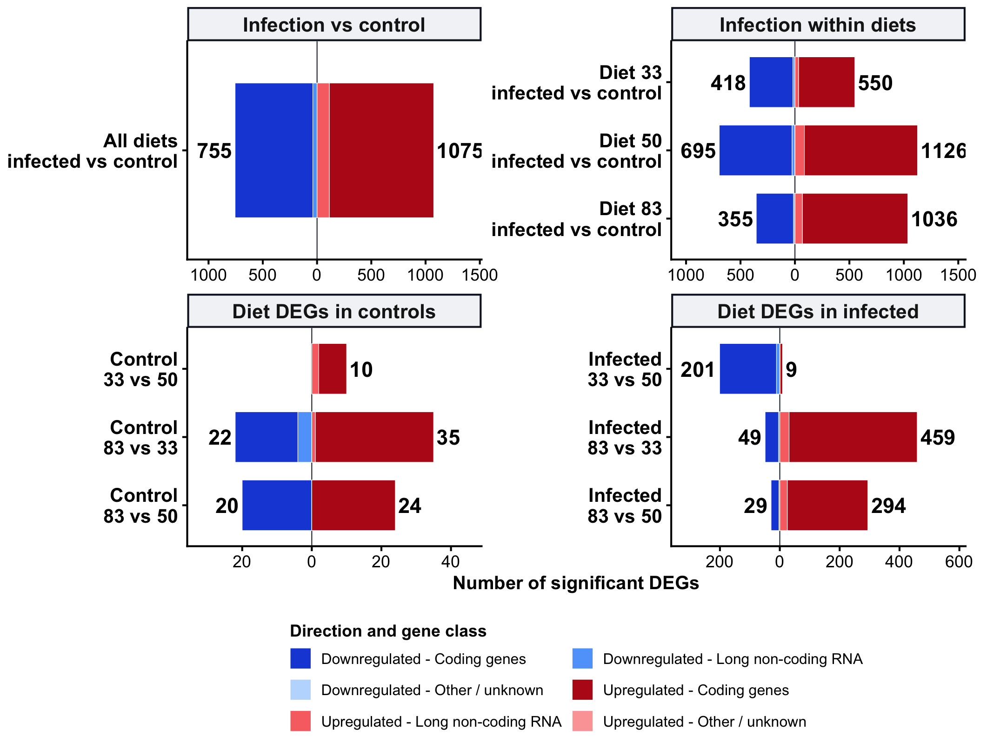
The Venn diagram is used in the primary composite. The ten-set exact-contrast UpSet plot is retained as a standalone alternative export.
scenario_degs <- read.csv(scenario_results_file, check.names = FALSE) |>
dplyr::filter(
scenario == "All samples",
significant,
!is.na(gene_id),
!is.na(padj),
padj < publication_params$alpha,
abs(log2FoldChange) >= publication_params$lfc_threshold
)
model_degs <- read.csv(model_coefficients_file, check.names = FALSE) |>
dplyr::filter(
coefficient == "Treatment_Infected_vs_Control",
significant,
!is.na(gene_id),
!is.na(padj),
padj < publication_params$alpha,
abs(log2FoldChange) >= publication_params$lfc_threshold
)
exact_contrast_order <- c(
"Diet 33: infected vs control",
"Diet 50: infected vs control",
"Diet 83: infected vs control",
"Control: diet 33 vs 50",
"Control: diet 83 vs 33",
"Control: diet 83 vs 50",
"Infected: diet 33 vs 50",
"Infected: diet 83 vs 33",
"Infected: diet 83 vs 50",
"All diets: infected vs control"
)
exact_deg_long <- deg_raw |>
dplyr::mutate(
exact_contrast = dplyr::case_when(
DEG_context == "Infection within diets" ~
paste0("Diet ", diet, ": infected vs control"),
DEG_context == "Diet DEGs in controls" ~
paste0("Control: diet ", numerator, " vs ", denominator),
DEG_context == "Diet DEGs in infected" ~
paste0("Infected: diet ", numerator, " vs ", denominator),
DEG_context == "Infection vs control" ~
"All diets: infected vs control",
TRUE ~ comparison
)
) |>
dplyr::filter(exact_contrast %in% exact_contrast_order) |>
dplyr::distinct(exact_contrast, gene_id)
exact_deg_sets <- lapply(exact_contrast_order, function(contrast_name) {
exact_deg_long$gene_id[exact_deg_long$exact_contrast == contrast_name]
})
names(exact_deg_sets) <- exact_contrast_order
exact_deg_sets <- exact_deg_sets[lengths(exact_deg_sets) > 0]
exact_overlap_genes <- sort(unique(unlist(exact_deg_sets,
use.names = FALSE)))
exact_overlap_membership <- data.frame(gene_id = exact_overlap_genes)
for (set_name in names(exact_deg_sets)) {
exact_overlap_membership[[set_name]] <-
exact_overlap_membership$gene_id %in% exact_deg_sets[[set_name]]
}
write.csv(
exact_overlap_membership,
file.path(out_dir, "figure2_panel_B_exact_contrast_upset_membership.csv"),
row.names = FALSE
)
upset_input <- UpSetR::fromList(exact_deg_sets)
upset_object <- UpSetR::upset(
upset_input,
sets = rev(names(exact_deg_sets)),
keep.order = TRUE,
nsets = length(exact_deg_sets),
nintersects = 30,
order.by = c("freq", "degree"),
decreasing = c(TRUE, FALSE),
mb.ratio = c(0.62, 0.38),
main.bar.color = "#8B0000",
sets.bar.color = "#D9A21B",
matrix.color = "#374151",
shade.color = "#E5E7EB",
shade.alpha = 0.55,
point.size = 3.0,
line.size = 0.9,
text.scale = c(1.45, 1.25, 1.05, 1.15, 1.05, 1.15),
mainbar.y.label = "Genes in exact intersections",
sets.x.label = "DEGs per exact contrast"
)
upset_grob <- grid::grid.grabExpr(
print(upset_object),
wrap = TRUE,
wrap.grobs = TRUE
)
p_upset <- ggplotify::as.ggplot(upset_grob)
p_upset_heading <- ggplot2::ggplot() +
ggplot2::annotate(
"text", x = 0, y = 0.72,
label = "Alternative exact-contrast DEG overlap",
hjust = 0,
fontface = "bold",
size = 5.2
) +
ggplot2::annotate(
"text", x = 0, y = 0.20,
label = "The 30 largest intersections are shown; set membership ignores direction",
hjust = 0,
size = 3.7
) +
ggplot2::xlim(0, 1) +
ggplot2::ylim(0, 1) +
ggplot2::theme_void() +
ggplot2::theme(plot.margin = ggplot2::margin(2, 8, 0, 8))
p_upset_panel <- p_upset_heading / p_upset +
patchwork::plot_layout(heights = c(0.10, 0.90))
save_png_svg(
p_upset_panel,
"figure2_panel_B_exact_contrast_upset",
width = 14.5,
height = 8.6
)
broad_deg_sets <- list(
"Infection within diets" = scenario_degs |>
dplyr::filter(comparison_type == "Infection within diet") |>
dplyr::pull(gene_id) |>
unique(),
"Diet DEGs in controls" = scenario_degs |>
dplyr::filter(comparison_type == "Diet contrasts among control") |>
dplyr::pull(gene_id) |>
unique(),
"Diet DEGs in infected" = scenario_degs |>
dplyr::filter(comparison_type == "Diet contrasts among infected") |>
dplyr::pull(gene_id) |>
unique(),
"Infection vs control" = unique(model_degs$gene_id)
)
broad_deg_sets <- broad_deg_sets[lengths(broad_deg_sets) > 0]
infection_diet_sets <- list(
"Diet 33" = scenario_degs |>
dplyr::filter(
comparison_type == "Infection within diet",
as.character(diet) == "33"
) |>
dplyr::pull(gene_id) |>
unique(),
"Diet 50" = scenario_degs |>
dplyr::filter(
comparison_type == "Infection within diet",
as.character(diet) == "50"
) |>
dplyr::pull(gene_id) |>
unique(),
"Diet 83" = scenario_degs |>
dplyr::filter(
comparison_type == "Infection within diet",
as.character(diet) == "83"
) |>
dplyr::pull(gene_id) |>
unique()
)
infection_diet_sets <- infection_diet_sets[lengths(infection_diet_sets) > 0]
infection_diet_genes <- sort(unique(unlist(infection_diet_sets,
use.names = FALSE)))
infection_diet_membership <- data.frame(gene_id = infection_diet_genes)
for (set_name in names(infection_diet_sets)) {
infection_diet_membership[[set_name]] <-
infection_diet_membership$gene_id %in% infection_diet_sets[[set_name]]
}
infection_diet_membership$intersection <- apply(
infection_diet_membership[names(infection_diet_sets)],
1,
function(x) paste(names(infection_diet_sets)[x], collapse = " + ")
)
write.csv(
infection_diet_membership,
file.path(out_dir, "figure2_infection_diet_venn_membership.csv"),
row.names = FALSE
)
infection_diet_summary <- infection_diet_membership |>
dplyr::count(intersection, name = "n_genes") |>
dplyr::arrange(dplyr::desc(n_genes), intersection)
write.csv(
infection_diet_summary,
file.path(out_dir, "figure2_infection_diet_venn_summary.csv"),
row.names = FALSE
)
all_overlap_genes <- sort(unique(unlist(broad_deg_sets, use.names = FALSE)))
overlap_membership <- data.frame(gene_id = all_overlap_genes)
for (set_name in names(broad_deg_sets)) {
overlap_membership[[set_name]] <- overlap_membership$gene_id %in%
broad_deg_sets[[set_name]]
}
overlap_membership$intersection <- apply(
overlap_membership[names(broad_deg_sets)],
1,
function(x) paste(names(broad_deg_sets)[x], collapse = " + ")
)
write.csv(overlap_membership,
file.path(out_dir, "figure2_deg_family_overlap_membership.csv"),
row.names = FALSE)
overlap_summary <- overlap_membership |>
dplyr::count(intersection, name = "n_genes") |>
dplyr::arrange(dplyr::desc(n_genes), intersection)
write.csv(overlap_summary,
file.path(out_dir, "figure2_deg_family_overlap_summary.csv"),
row.names = FALSE)
head_phase_degs <- read.csv(head_phase_file, check.names = FALSE) |>
dplyr::filter(
significant,
gene_id %in% main_chromosome_ids,
!is.na(gene_id),
!is.na(padj),
padj < publication_params$alpha,
abs(log2FoldChange) >= publication_params$lfc_threshold
)
thorax_phase_degs <- read.csv(thorax_phase_file, check.names = FALSE) |>
dplyr::filter(
significant,
gene_id %in% main_chromosome_ids,
!is.na(gene_id),
!is.na(padj),
padj < publication_params$alpha,
abs(log2FoldChange) >= publication_params$lfc_threshold
)
head_phase_genes <- unique(head_phase_degs$gene_id)
thorax_phase_genes <- unique(thorax_phase_degs$gene_id)
phase_genes <- intersect(head_phase_genes, thorax_phase_genes)
phase_overlap_sets <- list(
"Infection within diets" = broad_deg_sets[["Infection within diets"]],
"Head phase DEGs" = head_phase_genes,
"Thorax phase DEGs" = thorax_phase_genes
)
# Verify the exact gene sets displayed anywhere in Figure 2, including panel A.
figure2_gene_sets_for_rrna_audit <- c(
list("Panel A: directional DEG burden" = unique(deg_raw$gene_id)),
stats::setNames(exact_deg_sets, paste0("Exact contrast: ", names(exact_deg_sets))),
stats::setNames(broad_deg_sets, paste0("Broad context: ", names(broad_deg_sets))),
stats::setNames(infection_diet_sets,
paste0("Infection Venn: ", names(infection_diet_sets))),
stats::setNames(phase_overlap_sets,
paste0("Phase Venn: ", names(phase_overlap_sets)))
)
figure2_rrna_audit <- dplyr::bind_rows(lapply(
names(figure2_gene_sets_for_rrna_audit),
function(set_name) {
ids <- unique(figure2_gene_sets_for_rrna_audit[[set_name]])
tibble::tibble(
figure2_set = set_name,
genes_plotted = length(ids),
listed_rRNA_genes = sum(ids %in% rrna_ids)
)
}
))
write.csv(
figure2_rrna_audit,
file.path(out_dir, "figure2_rrna_exclusion_audit.csv"),
row.names = FALSE
)
if (any(figure2_rrna_audit$listed_rRNA_genes > 0)) {
stop("Figure 2 rRNA audit failed: at least one plotted set contains a listed rRNA gene.")
}
phase_overlap_genes <- sort(unique(unlist(phase_overlap_sets,
use.names = FALSE)))
phase_overlap_membership <- data.frame(gene_id = phase_overlap_genes)
for (set_name in names(phase_overlap_sets)) {
phase_overlap_membership[[set_name]] <-
phase_overlap_membership$gene_id %in% phase_overlap_sets[[set_name]]
}
phase_overlap_membership$intersection <- apply(
phase_overlap_membership[names(phase_overlap_sets)],
1,
function(x) paste(names(phase_overlap_sets)[x], collapse = " + ")
)
write.csv(phase_overlap_membership,
file.path(out_dir, "figure2_infection_phase_overlap_membership.csv"),
row.names = FALSE)
phase_overlap_summary <- phase_overlap_membership |>
dplyr::count(intersection, name = "n_genes") |>
dplyr::arrange(dplyr::desc(n_genes), intersection)
write.csv(phase_overlap_summary,
file.path(out_dir, "figure2_infection_phase_overlap_summary.csv"),
row.names = FALSE)
broad_deg_plot_sets <- broad_deg_sets
names(broad_deg_plot_sets) <- c(
"Infection\nwithin diet",
"Diet\ncontrols",
"Diet\ninfected",
"Infect.\nvs ctrl"
)
p_broad_context_venn <- ggVennDiagram::ggVennDiagram(
broad_deg_plot_sets,
label = "count",
label_alpha = 0,
edge_size = 0.75,
set_size = 7.2,
label_size = 7.2
) +
ggplot2::scale_fill_gradient(low = "#FFF7D1", high = "#D9A21B") +
ggplot2::theme_void(base_size = 12) +
ggplot2::theme(
legend.position = "none",
plot.background = ggplot2::element_rect(fill = "white", color = NA),
panel.background = ggplot2::element_rect(fill = "white", color = NA),
plot.margin = ggplot2::margin(8, 24, 8, 24)
) +
ggplot2::labs(
fill = "Genes"
)
save_png_svg(p_broad_context_venn, "figure2_broad_context_overlap_venn",
width = 10.5, height = 9.0)
p_venn <- ggVennDiagram::ggVennDiagram(
infection_diet_sets,
label = "count",
label_alpha = 0,
edge_size = 0.75,
set_size = 7.2,
label_size = 7.2
) +
ggplot2::scale_fill_gradient(low = "#EFF8F2", high = "#64B987") +
ggplot2::theme_void(base_size = 12) +
ggplot2::theme(
legend.position = "none",
plot.background = ggplot2::element_rect(fill = "white", color = NA),
panel.background = ggplot2::element_rect(fill = "white", color = NA),
plot.margin = ggplot2::margin(8, 24, 8, 24)
) +
ggplot2::labs(fill = "Genes")
save_png_svg(p_venn, "figure2_infection_degs_by_diet_venn",
width = 10.5, height = 9.0)
phase_overlap_plot_sets <- phase_overlap_sets
names(phase_overlap_plot_sets) <- c(
"Infection\nDEGs",
"Head\nphase",
"Thorax\nphase"
)
p_phase_venn <- ggVennDiagram::ggVennDiagram(
phase_overlap_plot_sets,
label = "count",
label_alpha = 0,
edge_size = 0.75,
set_size = 7.2,
label_size = 7.2
) +
ggplot2::scale_fill_gradient(low = "#FFF7D1", high = "#D9A21B") +
ggplot2::theme_void(base_size = 12) +
ggplot2::theme(
legend.position = "none",
plot.background = ggplot2::element_rect(fill = "white", color = NA),
panel.background = ggplot2::element_rect(fill = "white", color = NA),
plot.margin = ggplot2::margin(8, 24, 8, 24)
) +
ggplot2::labs(
fill = "Genes"
)
save_png_svg(p_phase_venn, "figure2_infection_phase_overlap_venn",
width = 10.5, height = 9.0)
gene_annotation <- build_gene_annotation(gff_file, eggnog_file)
deg_family_long <- dplyr::bind_rows(lapply(names(broad_deg_sets), function(set_name) {
data.frame(
DEG_family = set_name,
gene_id = broad_deg_sets[[set_name]],
stringsAsFactors = FALSE
)
}))
deg_family_long$DEG_family <- factor(
deg_family_long$DEG_family,
levels = names(broad_deg_sets)
)
candidate_theme_table <- deg_family_long |>
dplyr::left_join(gene_annotation, by = "gene_id") |>
dplyr::mutate(
annotation_text = dplyr::coalesce(annotation_text, ""),
base_physiology_theme = classify_physiology_theme(annotation_text),
phase_related = gene_id %in% phase_genes,
phase_reference_source = dplyr::case_when(
gene_id %in% head_phase_genes & gene_id %in% thorax_phase_genes ~
"Head + thorax phase DEG",
gene_id %in% head_phase_genes ~ "Head phase DEG",
gene_id %in% thorax_phase_genes ~ "Thorax phase DEG",
TRUE ~ "Not phase-related"
),
physiology_theme = dplyr::case_when(
base_physiology_theme != "Other / unannotated genes" ~
base_physiology_theme,
phase_related ~ "Phase-related changes",
TRUE ~ base_physiology_theme
),
physiology_theme = factor(physiology_theme,
levels = names(physiology_theme_colors))
)
write.csv(candidate_theme_table,
file.path(out_dir, "figure2_deg_family_candidate_theme_gene_table.csv"),
row.names = FALSE)
composition_counts <- candidate_theme_table |>
dplyr::distinct(DEG_family, gene_id, physiology_theme) |>
dplyr::count(DEG_family, physiology_theme, name = "n_genes") |>
dplyr::group_by(DEG_family) |>
tidyr::complete(
physiology_theme = factor(names(physiology_theme_colors),
levels = names(physiology_theme_colors)),
fill = list(n_genes = 0)
) |>
dplyr::mutate(
total_genes = sum(n_genes),
proportion = dplyr::if_else(total_genes > 0, n_genes / total_genes, 0)
) |>
dplyr::ungroup()
write.csv(composition_counts,
file.path(out_dir, "figure2_deg_family_candidate_theme_counts.csv"),
row.names = FALSE)
candidate_theme_levels <- names(physiology_theme_colors)
candidate_composition_counts <- composition_counts |>
dplyr::filter(physiology_theme %in% candidate_theme_levels) |>
dplyr::group_by(DEG_family) |>
dplyr::mutate(
candidate_genes = sum(n_genes),
candidate_proportion = dplyr::if_else(candidate_genes > 0,
n_genes / candidate_genes, 0)
) |>
dplyr::ungroup()
write.csv(candidate_composition_counts,
file.path(out_dir,
"figure2_deg_family_candidate_theme_counts_all_categories.csv"),
row.names = FALSE)
family_label_levels <- candidate_composition_counts |>
dplyr::distinct(DEG_family, total_genes, candidate_genes) |>
dplyr::arrange(DEG_family) |>
dplyr::mutate(
family_label = paste0(
DEG_family,
"\nall DEG n = ", total_genes
)
) |>
dplyr::pull(family_label)
pie_counts <- candidate_composition_counts |>
dplyr::filter(n_genes > 0) |>
dplyr::mutate(
family_label = paste0(
DEG_family,
"\nall DEG n = ", total_genes
),
family_label = factor(family_label, levels = family_label_levels)
)
p_composition <- ggplot2::ggplot(
pie_counts,
ggplot2::aes(x = "", y = candidate_proportion,
fill = physiology_theme)
) +
ggplot2::geom_col(width = 1, color = "white", linewidth = 0.4) +
ggplot2::coord_polar(theta = "y") +
ggplot2::facet_wrap(~ family_label, nrow = 1) +
ggplot2::scale_fill_manual(
values = physiology_theme_colors[candidate_theme_levels],
breaks = candidate_theme_levels,
drop = FALSE
) +
ggplot2::theme_void(base_size = 13) +
ggplot2::theme(
plot.title = ggplot2::element_text(face = "bold", size = 16),
plot.subtitle = ggplot2::element_text(size = 11),
strip.background = ggplot2::element_rect(fill = "#F3F4F6",
color = "#111827"),
strip.text = ggplot2::element_text(size = 10.5, face = "bold",
lineheight = 0.95),
legend.position = "bottom",
legend.text = ggplot2::element_text(size = 9),
legend.title = ggplot2::element_text(face = "bold"),
plot.margin = ggplot2::margin(4, 8, 8, 8)
) +
ggplot2::guides(
fill = ggplot2::guide_legend(nrow = 3, byrow = TRUE,
title.position = "top")
) +
ggplot2::labs(
title = "Standalone DEG physiology and phase-reference composition",
subtitle = "Immune and physiology annotations are prioritized; phase-related marks remaining DEGs common to head+thorax phase references",
fill = "Gene category"
)
save_png_svg(p_composition,
"figure2_panel_C_candidate_physiology_phase_composition",
width = 12, height = 5.6)
figure2 <- p_deg_biotype / (p_venn | p_phase_venn) +
patchwork::plot_layout(heights = c(0.50, 0.50))
save_png_svg(figure2, "figure2_deg_burden_context_phase_venns",
width = 20.5, height = 16.5)
figure2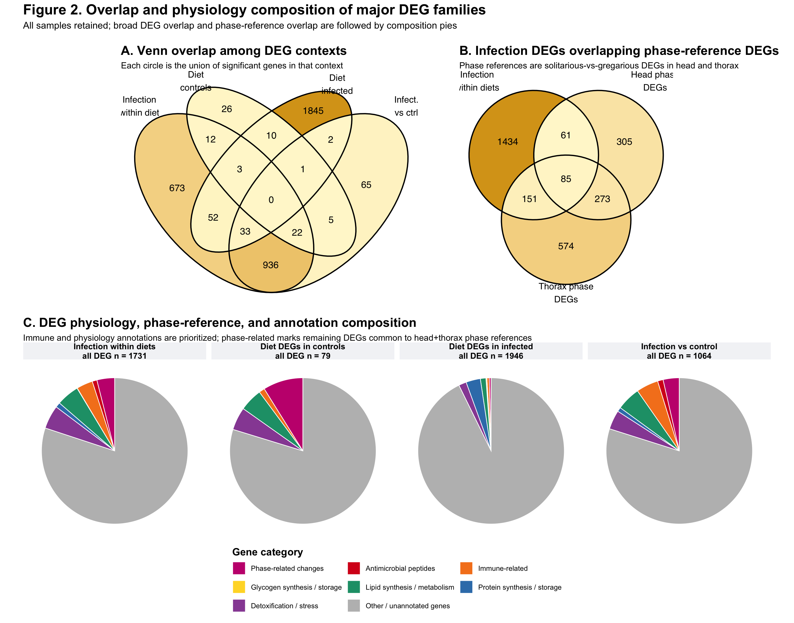
figure2_exports <- data.frame(
figure = c("Figure 2 composite PNG", "Figure 2 composite SVG",
"Figure 2A DEG burden PNG",
"Figure 2B infection DEGs by diet Venn PNG",
"Figure 2B infection DEGs by diet Venn SVG",
"Figure 2B infection-by-diet membership table",
"Figure 2C infection-phase Venn PNG",
"Figure 2C infection-phase Venn SVG",
"Alternative broad-context Venn PNG",
"Alternative broad-context Venn SVG",
"Alternative broad-context membership table",
"Alternative exact-contrast UpSet PNG",
"Alternative exact-contrast UpSet SVG",
"Alternative exact membership table",
"Standalone physiology composition PNG",
"Standalone candidate category gene table",
"Figure 2 rRNA exclusion audit"),
path = c(
file.path(out_dir, "figure2_deg_burden_context_phase_venns.png"),
file.path(out_dir, "figure2_deg_burden_context_phase_venns.svg"),
file.path(out_dir, "figure2_panel_A_deg_biotype_burden.png"),
file.path(out_dir, "figure2_infection_degs_by_diet_venn.png"),
file.path(out_dir, "figure2_infection_degs_by_diet_venn.svg"),
file.path(out_dir, "figure2_infection_diet_venn_membership.csv"),
file.path(out_dir, "figure2_infection_phase_overlap_venn.png"),
file.path(out_dir, "figure2_infection_phase_overlap_venn.svg"),
file.path(out_dir, "figure2_broad_context_overlap_venn.png"),
file.path(out_dir, "figure2_broad_context_overlap_venn.svg"),
file.path(out_dir, "figure2_deg_family_overlap_membership.csv"),
file.path(out_dir, "figure2_panel_B_exact_contrast_upset.png"),
file.path(out_dir, "figure2_panel_B_exact_contrast_upset.svg"),
file.path(out_dir,
"figure2_panel_B_exact_contrast_upset_membership.csv"),
file.path(out_dir,
"figure2_panel_C_candidate_physiology_phase_composition.png"),
file.path(out_dir, "figure2_deg_family_candidate_theme_gene_table.csv"),
file.path(out_dir, "figure2_rrna_exclusion_audit.csv")
),
present = file.exists(c(
file.path(out_dir, "figure2_deg_burden_context_phase_venns.png"),
file.path(out_dir, "figure2_deg_burden_context_phase_venns.svg"),
file.path(out_dir, "figure2_panel_A_deg_biotype_burden.png"),
file.path(out_dir, "figure2_infection_degs_by_diet_venn.png"),
file.path(out_dir, "figure2_infection_degs_by_diet_venn.svg"),
file.path(out_dir, "figure2_infection_diet_venn_membership.csv"),
file.path(out_dir, "figure2_infection_phase_overlap_venn.png"),
file.path(out_dir, "figure2_infection_phase_overlap_venn.svg"),
file.path(out_dir, "figure2_broad_context_overlap_venn.png"),
file.path(out_dir, "figure2_broad_context_overlap_venn.svg"),
file.path(out_dir, "figure2_deg_family_overlap_membership.csv"),
file.path(out_dir, "figure2_panel_B_exact_contrast_upset.png"),
file.path(out_dir, "figure2_panel_B_exact_contrast_upset.svg"),
file.path(out_dir,
"figure2_panel_B_exact_contrast_upset_membership.csv"),
file.path(out_dir,
"figure2_panel_C_candidate_physiology_phase_composition.png"),
file.path(out_dir, "figure2_deg_family_candidate_theme_gene_table.csv"),
file.path(out_dir, "figure2_rrna_exclusion_audit.csv")
))
)
knitr::kable(figure2_exports, caption = "Figure 2 and standalone overlap exports")| figure | path | present |
|---|---|---|
| Figure 2 composite PNG | /Users/maevatecher/Documents/GitHub/gregaria-diet-infection-interaction/output/rmd_runs/publication-figures_20260816-214113/figure2_deg_burden_context_phase_venns.png | TRUE |
| Figure 2 composite SVG | /Users/maevatecher/Documents/GitHub/gregaria-diet-infection-interaction/output/rmd_runs/publication-figures_20260816-214113/figure2_deg_burden_context_phase_venns.svg | TRUE |
| Figure 2A DEG burden PNG | /Users/maevatecher/Documents/GitHub/gregaria-diet-infection-interaction/output/rmd_runs/publication-figures_20260816-214113/figure2_panel_A_deg_biotype_burden.png | TRUE |
| Figure 2B infection DEGs by diet Venn PNG | /Users/maevatecher/Documents/GitHub/gregaria-diet-infection-interaction/output/rmd_runs/publication-figures_20260816-214113/figure2_infection_degs_by_diet_venn.png | TRUE |
| Figure 2B infection DEGs by diet Venn SVG | /Users/maevatecher/Documents/GitHub/gregaria-diet-infection-interaction/output/rmd_runs/publication-figures_20260816-214113/figure2_infection_degs_by_diet_venn.svg | TRUE |
| Figure 2B infection-by-diet membership table | /Users/maevatecher/Documents/GitHub/gregaria-diet-infection-interaction/output/rmd_runs/publication-figures_20260816-214113/figure2_infection_diet_venn_membership.csv | TRUE |
| Figure 2C infection-phase Venn PNG | /Users/maevatecher/Documents/GitHub/gregaria-diet-infection-interaction/output/rmd_runs/publication-figures_20260816-214113/figure2_infection_phase_overlap_venn.png | TRUE |
| Figure 2C infection-phase Venn SVG | /Users/maevatecher/Documents/GitHub/gregaria-diet-infection-interaction/output/rmd_runs/publication-figures_20260816-214113/figure2_infection_phase_overlap_venn.svg | TRUE |
| Alternative broad-context Venn PNG | /Users/maevatecher/Documents/GitHub/gregaria-diet-infection-interaction/output/rmd_runs/publication-figures_20260816-214113/figure2_broad_context_overlap_venn.png | TRUE |
| Alternative broad-context Venn SVG | /Users/maevatecher/Documents/GitHub/gregaria-diet-infection-interaction/output/rmd_runs/publication-figures_20260816-214113/figure2_broad_context_overlap_venn.svg | TRUE |
| Alternative broad-context membership table | /Users/maevatecher/Documents/GitHub/gregaria-diet-infection-interaction/output/rmd_runs/publication-figures_20260816-214113/figure2_deg_family_overlap_membership.csv | TRUE |
| Alternative exact-contrast UpSet PNG | /Users/maevatecher/Documents/GitHub/gregaria-diet-infection-interaction/output/rmd_runs/publication-figures_20260816-214113/figure2_panel_B_exact_contrast_upset.png | TRUE |
| Alternative exact-contrast UpSet SVG | /Users/maevatecher/Documents/GitHub/gregaria-diet-infection-interaction/output/rmd_runs/publication-figures_20260816-214113/figure2_panel_B_exact_contrast_upset.svg | TRUE |
| Alternative exact membership table | /Users/maevatecher/Documents/GitHub/gregaria-diet-infection-interaction/output/rmd_runs/publication-figures_20260816-214113/figure2_panel_B_exact_contrast_upset_membership.csv | TRUE |
| Standalone physiology composition PNG | /Users/maevatecher/Documents/GitHub/gregaria-diet-infection-interaction/output/rmd_runs/publication-figures_20260816-214113/figure2_panel_C_candidate_physiology_phase_composition.png | TRUE |
| Standalone candidate category gene table | /Users/maevatecher/Documents/GitHub/gregaria-diet-infection-interaction/output/rmd_runs/publication-figures_20260816-214113/figure2_deg_family_candidate_theme_gene_table.csv | TRUE |
| Figure 2 rRNA exclusion audit | /Users/maevatecher/Documents/GitHub/gregaria-diet-infection-interaction/output/rmd_runs/publication-figures_20260816-214113/figure2_rrna_exclusion_audit.csv | TRUE |
Figure 3 uses the two primary chromosome-only expression clusters. Panel A aligns the 0-0.1% fungal-alignment zoom above the treatment/diet annotations and the complete gene-level main-chromosome DEG heatmap. Values exceeding 0.1% are capped only for display and retain their full percentage as enlarged white labels. Panels B and C use only genes differentially expressed for infected versus control within at least one diet, with cluster 1 and cluster 2 tested separately. The overall all-DEG enrichment remains on the analysis page and is not repeated here. The primary KEGG panel is insect/arthropod-focused and retains only pathways whose KEGG definition explicitly concerns insects or a fly model. A separate eukaryote-inclusive lollipop version preserves conserved cross-domain and broad reference pathways after excluding explicitly microbial/prokaryotic and disease-reference labels. The broader pathways are also available around a locust illustration; connector positions are conceptual and do not represent measured sub-tissue localization. The complete pathway-scope and pathway-gene audits remain available.
| figure | format | source | copied_to | present |
|---|---|---|---|---|
| Composite: eukaryote-inclusive KEGG pathway illustration | png | expression_cluster_gene_level_GO_KEGG_pathway_illustration.png | figure3_expression_cluster_gene_level_GO_KEGG_pathway_illustration.png | TRUE |
| Composite: eukaryote-inclusive KEGG pathway illustration | svg | expression_cluster_gene_level_GO_KEGG_pathway_illustration.svg | figure3_expression_cluster_gene_level_GO_KEGG_pathway_illustration.svg | TRUE |
| Composite: eukaryote-inclusive KEGG lollipops | png | expression_cluster_gene_level_GO_KEGG_lollipop.png | figure3_expression_cluster_gene_level_GO_KEGG_lollipop_eukaryote_inclusive.png | TRUE |
| Composite: eukaryote-inclusive KEGG lollipops | svg | expression_cluster_gene_level_GO_KEGG_lollipop.svg | figure3_expression_cluster_gene_level_GO_KEGG_lollipop_eukaryote_inclusive.svg | TRUE |
| Composite without panel titles: KEGG pathway illustration | png | expression_cluster_gene_level_GO_KEGG_pathway_illustration_title_free.png | figure3_expression_cluster_gene_level_GO_KEGG_pathway_illustration_title_free.png | TRUE |
| Composite without panel titles: KEGG pathway illustration | svg | expression_cluster_gene_level_GO_KEGG_pathway_illustration_title_free.svg | figure3_expression_cluster_gene_level_GO_KEGG_pathway_illustration_title_free.svg | TRUE |
| Composite without panel titles: eukaryote-inclusive KEGG lollipops | png | expression_cluster_gene_level_GO_KEGG_lollipop_eukaryote_inclusive_title_free.png | figure3_expression_cluster_gene_level_GO_KEGG_lollipop_eukaryote_inclusive_title_free.png | TRUE |
| Composite without panel titles: eukaryote-inclusive KEGG lollipops | svg | expression_cluster_gene_level_GO_KEGG_lollipop_eukaryote_inclusive_title_free.svg | figure3_expression_cluster_gene_level_GO_KEGG_lollipop_eukaryote_inclusive_title_free.svg | TRUE |
| Composite: insect-focused KEGG lollipops | png | expression_cluster_gene_level_GO_KEGG_lollipop_insect_focused.png | figure3_expression_cluster_gene_level_GO_KEGG_lollipop_insect_focused.png | TRUE |
| Composite: insect-focused KEGG lollipops | svg | expression_cluster_gene_level_GO_KEGG_lollipop_insect_focused.svg | figure3_expression_cluster_gene_level_GO_KEGG_lollipop_insect_focused.svg | TRUE |
| Panel C: insect/arthropod-focused KEGG lollipops | png | figure3_panel_C_two_cluster_KEGG_insect_focused.png | figure3_panel_C_two_cluster_KEGG_insect_arthropod_focused.png | TRUE |
| Panel C: insect/arthropod-focused KEGG lollipops | svg | figure3_panel_C_two_cluster_KEGG_insect_focused.svg | figure3_panel_C_two_cluster_KEGG_insect_arthropod_focused.svg | TRUE |
| Composite: reference-context companion | png | expression_cluster_gene_level_GO_KEGG_lollipop_with_references.png | figure3_expression_cluster_gene_level_GO_KEGG_lollipop_with_references.png | TRUE |
| Composite: reference-context companion | svg | expression_cluster_gene_level_GO_KEGG_lollipop_with_references.svg | figure3_expression_cluster_gene_level_GO_KEGG_lollipop_with_references.svg | TRUE |
| Panel A: fungal percentage and two-cluster heatmap | png | figure3_panel_A_two_cluster_heatmap.png | figure3_panel_A_fungal_percentage_two_cluster_heatmap.png | TRUE |
| Panel A: fungal percentage and two-cluster heatmap | svg | figure3_panel_A_two_cluster_heatmap.svg | figure3_panel_A_fungal_percentage_two_cluster_heatmap.svg | TRUE |
| Panel A without title: fungal percentage and two-cluster heatmap | png | figure3_panel_A_two_cluster_heatmap_title_free.png | figure3_panel_A_fungal_percentage_two_cluster_heatmap_title_free.png | TRUE |
| Panel A without title: fungal percentage and two-cluster heatmap | svg | figure3_panel_A_two_cluster_heatmap_title_free.svg | figure3_panel_A_fungal_percentage_two_cluster_heatmap_title_free.svg | TRUE |
| Panel B: two-cluster GO enrichment | png | figure3_panel_B_two_cluster_GO.png | figure3_panel_B_two_cluster_GO.png | TRUE |
| Panel B: two-cluster GO enrichment | svg | figure3_panel_B_two_cluster_GO.svg | figure3_panel_B_two_cluster_GO.svg | TRUE |
| Panel B without title: two-cluster GO enrichment | png | figure3_panel_B_two_cluster_GO_title_free.png | figure3_panel_B_two_cluster_GO_title_free.png | TRUE |
| Panel B without title: two-cluster GO enrichment | svg | figure3_panel_B_two_cluster_GO_title_free.svg | figure3_panel_B_two_cluster_GO_title_free.svg | TRUE |
| Panel C: eukaryote-inclusive KEGG pathway illustration | png | figure3_panel_C_two_cluster_KEGG_pathway_illustration.png | figure3_panel_C_two_cluster_KEGG_pathway_illustration.png | TRUE |
| Panel C: eukaryote-inclusive KEGG pathway illustration | svg | figure3_panel_C_two_cluster_KEGG_pathway_illustration.svg | figure3_panel_C_two_cluster_KEGG_pathway_illustration.svg | TRUE |
| Panel C without title: KEGG pathway illustration | png | figure3_panel_C_two_cluster_KEGG_pathway_illustration_title_free.png | figure3_panel_C_two_cluster_KEGG_pathway_illustration_title_free.png | TRUE |
| Panel C without title: KEGG pathway illustration | svg | figure3_panel_C_two_cluster_KEGG_pathway_illustration_title_free.svg | figure3_panel_C_two_cluster_KEGG_pathway_illustration_title_free.svg | TRUE |
| Panel C alternative: eukaryote-inclusive KEGG lollipops | png | figure3_panel_C_two_cluster_KEGG_eukaryote_inclusive.png | figure3_panel_C_two_cluster_KEGG_eukaryote_inclusive.png | TRUE |
| Panel C alternative: eukaryote-inclusive KEGG lollipops | svg | figure3_panel_C_two_cluster_KEGG_eukaryote_inclusive.svg | figure3_panel_C_two_cluster_KEGG_eukaryote_inclusive.svg | TRUE |
| Panel C without title: eukaryote-inclusive KEGG lollipops | png | figure3_panel_C_two_cluster_KEGG_eukaryote_inclusive_title_free.png | figure3_panel_C_two_cluster_KEGG_eukaryote_inclusive_title_free.png | TRUE |
| Panel C without title: eukaryote-inclusive KEGG lollipops | svg | figure3_panel_C_two_cluster_KEGG_eukaryote_inclusive_title_free.svg | figure3_panel_C_two_cluster_KEGG_eukaryote_inclusive_title_free.svg | TRUE |
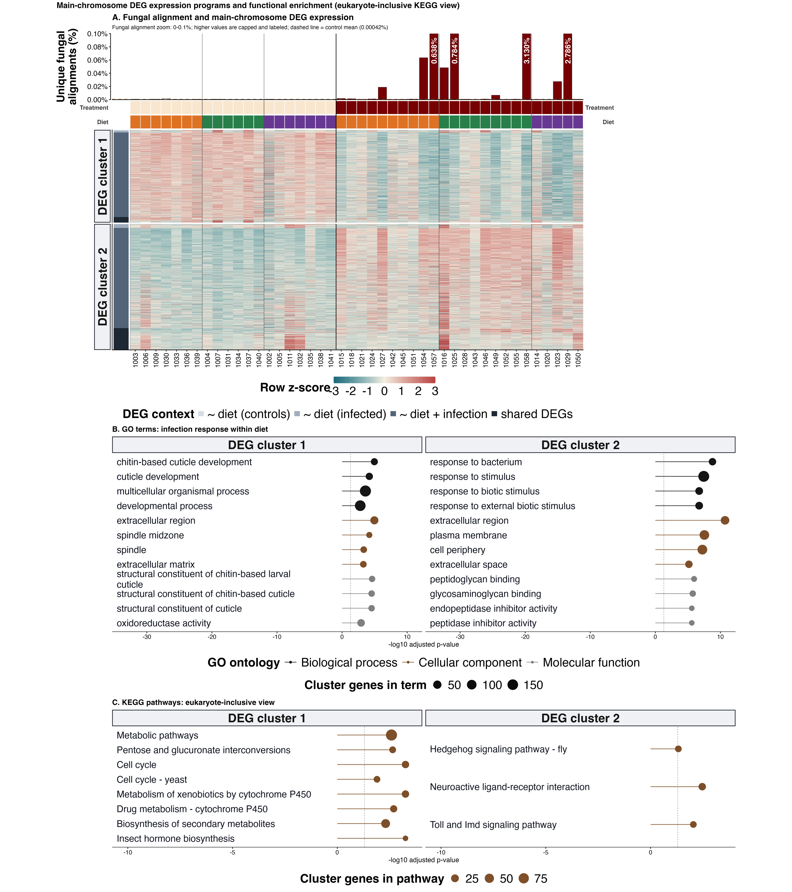
Figure 4 preserves the curated biological categories and recalculates
every DEG status from the corrected 44-sample competitive-host
transcript+exon analysis. The supplied v21 workbook contains 111 unique
targets (77 immune and 34 protein-anabolism genes), and all 111 map to
main nuclear chromosomes. Each target therefore stays in the denominator
for every contrast and is shown as N.S. when it does not
meet the current adjusted-P-value and fold-change thresholds. The
matched all-scaffold view is retained as a reproducibility check and has
the same target denominator. Placement details remain searchable on the
curated target-gene
analysis page. A separate audit view isolates the curated targets
carrying the scaffold-origin page’s non-metazoan homology review flags;
those flags do not prove that the genes are contaminants.
| figure | source | copied_to | present |
|---|---|---|---|
| Figure 4 main-chromosome curated targets | figure4_curated_targets_main_chromosomes.png | figure4_curated_targets_main_chromosomes.png | TRUE |
| Figure 4 all-scaffold curated targets | figure4_curated_targets_all_scaffolds.png | figure4_curated_targets_all_scaffolds.png | TRUE |
| Figure 4 homology-review targets | figure4_curated_targets_non_grasshopper_homology_flags.png | figure4_curated_targets_non_grasshopper_homology_flags.png | TRUE |
| Figure 4 placement-impact audit | curated_target_placement_impact.png | figure4_curated_target_placement_impact.png | TRUE |

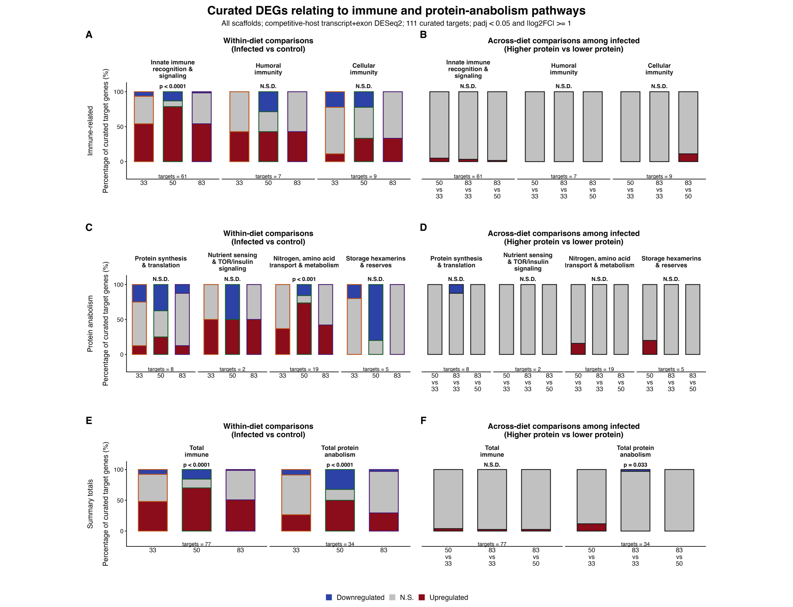
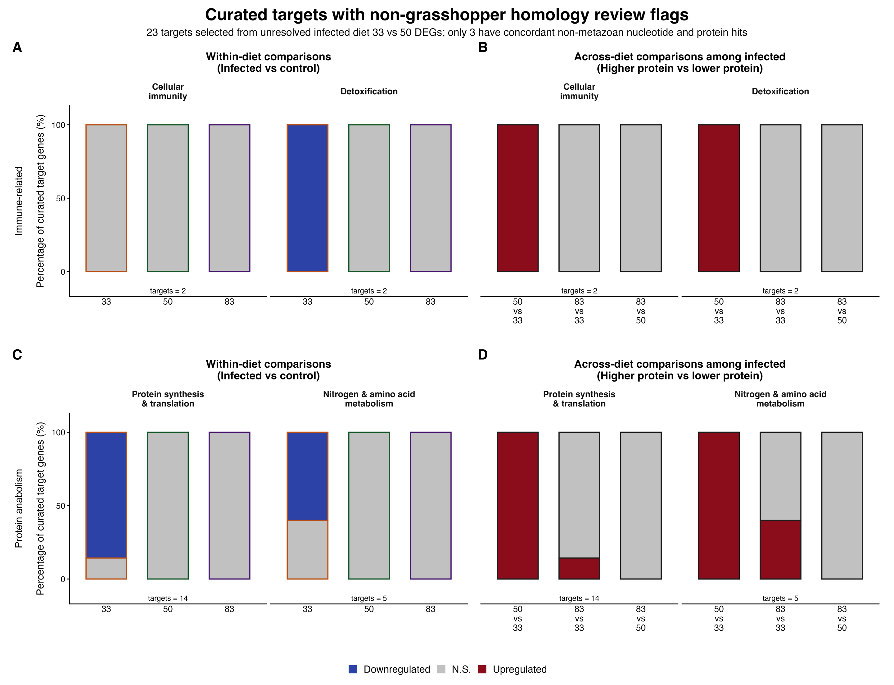
Figure S1 preserves all 45 sequenced libraries for the technical QC
comparison, while all biological models use the 44-library cohort after
excluding 1044. Panel A shows unique mapping and panel B shows unique
plus accepted multimapping. The factorial diet, infection, and
interaction tests are printed on the panels. Samples 1007,
1036, 1037, and 1039 remain
included.
[1] TRUE TRUE TRUE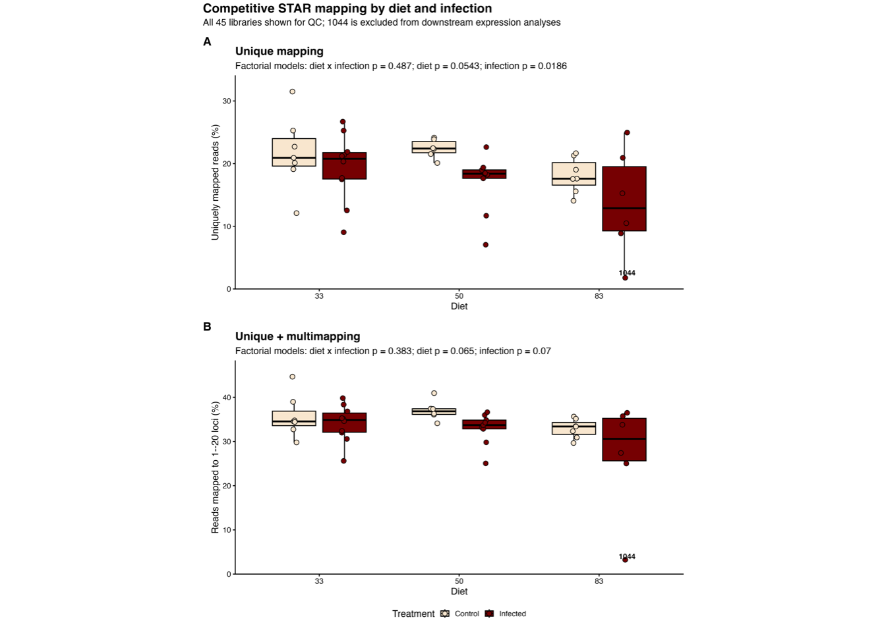
| Version | Author | Date |
|---|---|---|
| b30a02b | Maeva TECHER | 2026-08-11 |
| file | present |
|---|---|
| figureS1_mapping_quality_exclusion_1044.png | TRUE |
| figureS1_mapping_quality_exclusion_1044.svg | TRUE |
| figureS1_mapping_quality_exclusion_1044.pdf | TRUE |
Figure S2 summarizes Kraken2/Bracken family assignments among reads that did not align to the host-only reference. Metazoan and plant families are excluded; the retained profiles comprise fungi, bacteria, archaea, viruses, and other microbial eukaryotes. Panels A and B show absolute Bracken-estimated reads and their relative composition among retained non-host taxonomic families; panel C shows Bray-Curtis ordination. This is supporting metatranscriptomic evidence rather than a dedicated microbiome assay.
[1] TRUE TRUE TRUE TRUE TRUE TRUE TRUE TRUE TRUE TRUE TRUE TRUE TRUE TRUE TRUE
[16] TRUE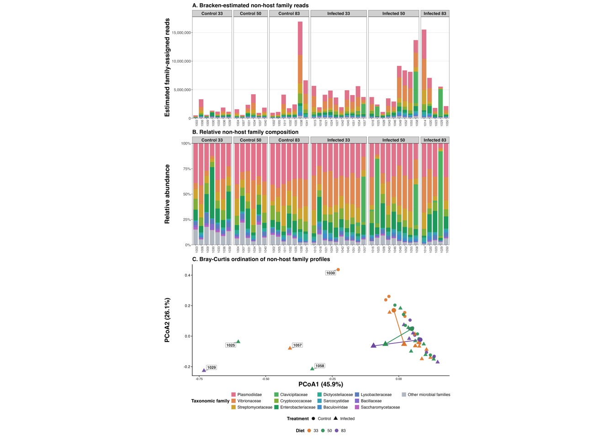
| file | present |
|---|---|
| figureS2_bracken_host_unmapped_family_composition.png | TRUE |
| figureS2_bracken_host_unmapped_family_composition.svg | TRUE |
| figureS2_bracken_host_unmapped_family_composition.pdf | TRUE |
| figureS2_bracken_host_unmapped_family_composition_large_text_narrow.png | TRUE |
| figureS2_bracken_host_unmapped_family_composition_large_text_narrow.svg | TRUE |
| figureS2_bracken_host_unmapped_family_composition_large_text_narrow.pdf | TRUE |
| bracken_host_unmapped_family_abundance_long.csv | TRUE |
| bracken_host_unmapped_family_display_table.csv | TRUE |
| bracken_host_unmapped_family_pcoa_scores.csv | TRUE |
| bracken_host_unmapped_family_pcoa_offset_labels.csv | TRUE |
| bracken_host_unmapped_family_permanova.csv | TRUE |
| bracken_host_unmapped_family_dispersion_test.csv | TRUE |
| bracken_host_unmapped_burden_by_sample.csv | TRUE |
| bracken_host_unmapped_burden_design_tests.csv | TRUE |
| bracken_host_unmapped_burden_mass_tests.csv | TRUE |
| bracken_host_unmapped_burden_group_summary.csv | TRUE |
Two versions are exported from the same statistical results. The first colors only the fixed set of 115 Manual curation candidate genes. The second colors all 366 physiological candidates: the 115 manual candidates plus 251 eggNOG-supported candidate genes. The eggNOG-supported tier retains genes only when they are absent from the manual set, significant in at least one displayed contrast, and supported by an explicit eggNOG description, name, GO term, KEGG annotation, or PFAM domain. Dark candidate points denote manual candidates; lighter points denote eggNOG-supported candidates. The source table records the exact field and keyword supporting every eggNOG-based assignment.
Panel A shows the averaged infection effect followed by infection within each diet. Panels B and C show the three direct diet comparisons among control and infected locusts, respectively. Every tested main-chromosome, non-rRNA gene remains visible: pale gray points are non-significant genes, dark gray points are other significant DEGs, and larger colored circles are physiological candidates. Positive fold changes indicate higher expression in infected locusts or in the first-listed diet; negative values indicate higher expression in controls or in the second-listed diet. Vertical dashed lines mark absolute log2 fold change of 1, and the horizontal dashed line marks adjusted P = 0.05. Because candidate themes were informed by annotation review of this dataset, the visualization is exploratory rather than an independent enrichment test.
Labels follow an objective rule. Among significant physiological candidates with a mean normalized count of at least 10 and an informative description, up to three genes are labelled per contrast, with manual curation candidates ranked before eggNOG-supported candidates and then by absolute unshrunken log2 fold change. Adjusted P values determine significance; the label ranking is descriptive and does not constitute an additional statistical test.
s3_direct <- read.csv(scenario_results_file, check.names = FALSE) |>
dplyr::filter(scenario == "All samples") |>
dplyr::left_join(
direct_contrasts |>
dplyr::select(contrast_id, comparison),
by = "comparison"
) |>
dplyr::transmute(
contrast_id,
comparison_type,
comparison,
gene_id,
baseMean,
log2FoldChange,
pvalue,
padj,
significant = !is.na(padj) &
padj < publication_params$alpha &
abs(log2FoldChange) >= publication_params$lfc_threshold
)
s3_average <- read.csv(model_coefficients_file, check.names = FALSE) |>
dplyr::transmute(
contrast_id = "infection_average_all_diets",
comparison_type = "Average infection response",
comparison = "All diets: infected vs control",
gene_id,
baseMean,
log2FoldChange,
pvalue,
padj,
significant = !is.na(padj) &
padj < publication_params$alpha &
abs(log2FoldChange) >= publication_params$lfc_threshold
)
s3_contrast_levels <- c(
"infection_average_all_diets",
"infection_diet33", "infection_diet50", "infection_diet83",
"control_diet33_vs50", "control_diet83_vs33", "control_diet83_vs50",
"infected_diet33_vs50", "infected_diet83_vs33", "infected_diet83_vs50"
)
s3_facet_labels <- c(
"infection_average_all_diets" = "All diets\nInfected vs control",
"infection_diet33" = "Diet 33\nInfected vs control",
"infection_diet50" = "Diet 50\nInfected vs control",
"infection_diet83" = "Diet 83\nInfected vs control",
"control_diet33_vs50" = "Controls\nDiet 33 vs 50",
"control_diet83_vs33" = "Controls\nDiet 83 vs 33",
"control_diet83_vs50" = "Controls\nDiet 83 vs 50",
"infected_diet33_vs50" = "Infected\nDiet 33 vs 50",
"infected_diet83_vs33" = "Infected\nDiet 83 vs 33",
"infected_diet83_vs50" = "Infected\nDiet 83 vs 50"
)
s3_candidate_theme_levels <- c(
"Immune pathways",
"Protein storage and synthesis",
"Carbohydrate storage and metabolism",
"Lipid metabolism",
"Detoxification and stress response"
)
s3_candidate_theme_colors <- c(
"Immune pathways" = "#C43C39",
"Protein storage and synthesis" = "#356FA3",
"Carbohydrate storage and metabolism" = "#D4A017",
"Lipid metabolism" = "#238B6B",
"Detoxification and stress response" = "#7B4FA3"
)
s3_evidence_levels <- c(
"Manual curation candidate",
"eggNOG-supported candidate"
)
s3_evidence_alpha <- c(
"Manual curation candidate" = 1,
"eggNOG-supported candidate" = 0.42
)
s3_label_base_mean_min <- 10
s3_manual_candidates <- dplyr::bind_rows(
readxl::read_excel(manual_candidate_file, sheet = "Immune"),
readxl::read_excel(manual_candidate_file, sheet = "Protein-Anabolism")
) |>
dplyr::transmute(
gene_id = trimws(as.character(`Gene ID`)),
manual_description = trimws(as.character(`Gene Description`)),
manual_theme = trimws(as.character(`Umbrella Category`)),
manual_subcategory = trimws(as.character(`Sub-Category`)),
candidate_theme = dplyr::case_when(
stringr::str_detect(
manual_theme,
"Immune|Humoral|Cellular"
) ~ "Immune pathways",
stringr::str_detect(
manual_theme,
"Nitrogen|Protein Synthesis|Storage Hexamerins"
) ~ "Protein storage and synthesis",
TRUE ~ NA_character_
)
) |>
dplyr::filter(stringr::str_starts(gene_id, "LOC")) |>
dplyr::distinct(gene_id, .keep_all = TRUE)
if (nrow(s3_manual_candidates) != 115) {
stop(
"The manual candidate workbook should contain 115 unique LOC Gene IDs; found ",
nrow(s3_manual_candidates), "."
)
}
s3_supplement_regex <- c(
"Immune pathways" = paste0(
"antimicrobial|defensin|attacin|cecropin|diptericin|gloverin|",
"metchnikowin|thaumatin|termicin|lysozyme|toll|imd|relish|myd88|",
"cactus|dorsal|nf-kappa|nf kappa|jak|stat|immune|peptidoglycan|",
"pgrp|gram-negative|gram negative|beta-1,3-glucan|glucan binding|",
"phenoloxidase|prophenoloxidase|melanization|lectin|hemocyanin|",
"complement|serpin"
),
"Protein storage and synthesis" = paste0(
"protein synthesis|translation|ribosom|elongation factor|",
"initiation factor|aminoacyl|trna synthetase|vitellogenin|",
"hexamerin|arylphorin|storage protein"
),
"Carbohydrate storage and metabolism" =
"glycogen|glycogenin|branching enzyme|starch",
"Lipid metabolism" = paste0(
"lipid|fatty acid|fatty-acid|acyl-coa|acyl coa|",
"acetyl-coa carboxylase|elongase|desaturase|glycerolipid|",
"phospholipid|triacylglycerol|diacylglycerol|sterol|lipase"
),
"Detoxification and stress response" = paste0(
"detox|cytochrome p450|\\bcyp[0-9a-z]|glutathione|gst|",
"carboxylesterase|esterase|udp-glucuronosyltransferase|\\bugt\\b|",
"abc transporter|oxidoreductase|peroxidase|catalase|superoxide|",
"heat shock|stress"
)
)
s3_classify_supplement <- function(annotation_text) {
text <- stringr::str_to_lower(dplyr::coalesce(annotation_text, ""))
dplyr::case_when(
stringr::str_detect(text, s3_supplement_regex[["Immune pathways"]]) ~
"Immune pathways",
stringr::str_detect(
text,
s3_supplement_regex[["Protein storage and synthesis"]]
) ~ "Protein storage and synthesis",
stringr::str_detect(
text,
s3_supplement_regex[["Carbohydrate storage and metabolism"]]
) ~ "Carbohydrate storage and metabolism",
stringr::str_detect(text, s3_supplement_regex[["Lipid metabolism"]]) ~
"Lipid metabolism",
stringr::str_detect(
text,
s3_supplement_regex[["Detoxification and stress response"]]
) ~ "Detoxification and stress response",
TRUE ~ NA_character_
)
}
s3_nonempty_annotation <- function(x) {
!is.na(x) & trimws(as.character(x)) != "" & trimws(as.character(x)) != "-"
}
s3_join_evidence <- function(description, preferred_name, gos, ko, pathway,
pfams, return_types = FALSE) {
values <- Map(
c,
description, preferred_name, gos, ko, pathway, pfams
)
field_labels <- c(
"eggNOG description", "eggNOG preferred name", "GO terms",
"KEGG orthology", "KEGG pathways", "PFAM domains"
)
vapply(values, function(row_values) {
keep <- s3_nonempty_annotation(row_values)
if (!any(keep)) return(NA_character_)
if (return_types) return(paste(field_labels[keep], collapse = "; "))
paste(paste0(field_labels[keep], ": ", row_values[keep]), collapse = "; ")
}, character(1))
}
s3_match_supplement_keyword <- function(annotation_text, theme) {
mapply(function(text, selected_theme) {
if (is.na(selected_theme) || !selected_theme %in% names(s3_supplement_regex)) {
return(NA_character_)
}
stringr::str_extract(
stringr::str_to_lower(dplyr::coalesce(text, "")),
s3_supplement_regex[[selected_theme]]
)
}, annotation_text, theme, USE.NAMES = FALSE)
}
s3_volcano_base <- dplyr::bind_rows(s3_average, s3_direct) |>
dplyr::filter(
contrast_id %in% s3_contrast_levels,
!is.na(log2FoldChange),
!is.na(padj)
) |>
dplyr::left_join(
gene_annotation |>
dplyr::select(
gene_id, Description, gene_biotype, annotation_text,
eggNOG_Description, eggNOG_name, GOs, KEGG_ko,
KEGG_Pathway, PFAMs
),
by = "gene_id"
) |>
dplyr::mutate(
Description = dplyr::coalesce(Description, "no GFF description"),
gene_biotype = dplyr::coalesce(gene_biotype, "unknown"),
minus_log10_padj = -log10(pmax(padj, .Machine$double.xmin)),
importance_score = abs(log2FoldChange) *
log10(pmax(baseMean, 0) + 1) *
minus_log10_padj,
contrast_id = factor(contrast_id, levels = s3_contrast_levels),
facet_label = factor(
unname(s3_facet_labels[as.character(contrast_id)]),
levels = unname(s3_facet_labels[s3_contrast_levels])
),
eggnog_annotation_text = stringr::str_squish(paste(
eggNOG_Description, eggNOG_name, GOs, KEGG_ko,
KEGG_Pathway, PFAMs, sep = " | "
))
)
s3_candidate_volcano_data <- s3_volcano_base |>
dplyr::left_join(s3_manual_candidates, by = "gene_id") |>
dplyr::mutate(
supplementary_theme = s3_classify_supplement(eggnog_annotation_text),
supplementary_matched_keyword = s3_match_supplement_keyword(
eggnog_annotation_text,
supplementary_theme
),
eggnog_support_type = s3_join_evidence(
eggNOG_Description, eggNOG_name, GOs, KEGG_ko,
KEGG_Pathway, PFAMs, return_types = TRUE
),
eggnog_supporting_annotation = s3_join_evidence(
eggNOG_Description, eggNOG_name, GOs, KEGG_ko,
KEGG_Pathway, PFAMs, return_types = FALSE
),
evidence_tier = dplyr::case_when(
!is.na(manual_theme) ~ "Manual curation candidate",
!is.na(supplementary_theme) & !is.na(eggnog_support_type) ~
"eggNOG-supported candidate",
TRUE ~ NA_character_
),
candidate_theme = dplyr::case_when(
evidence_tier == "Manual curation candidate" ~ candidate_theme,
evidence_tier == "eggNOG-supported candidate" ~ supplementary_theme,
TRUE ~ NA_character_
),
candidate_description = dplyr::coalesce(manual_description, Description),
candidate_subcategory = manual_subcategory,
candidate_reason = dplyr::case_when(
evidence_tier == "Manual curation candidate" ~ paste0(
"Manual curation candidate: ", manual_theme,
dplyr::if_else(
is.na(manual_subcategory) | manual_subcategory == "",
"", paste0(" / ", manual_subcategory)
)
),
evidence_tier == "eggNOG-supported candidate" ~ paste0(
"eggNOG-supported candidate: ", supplementary_theme,
"; matched keyword: ", supplementary_matched_keyword,
". Support fields: ", eggnog_support_type
),
TRUE ~ NA_character_
),
evidence_tier = factor(evidence_tier, levels = s3_evidence_levels),
candidate_theme = factor(candidate_theme, levels = s3_candidate_theme_levels),
functional_highlight = significant & !is.na(evidence_tier) &
!is.na(candidate_theme)
)
s3_make_label_data <- function(plot_data) {
plot_data |>
dplyr::filter(
functional_highlight,
baseMean >= s3_label_base_mean_min,
!stringr::str_detect(
stringr::str_to_lower(candidate_description),
"^(uncharacterized|no gff description)"
)
) |>
dplyr::group_by(contrast_id) |>
dplyr::arrange(
dplyr::desc(evidence_tier == "Manual curation candidate"),
dplyr::desc(abs(log2FoldChange)),
dplyr::desc(baseMean),
padj,
.by_group = TRUE
) |>
dplyr::slice_head(n = 3) |>
dplyr::ungroup() |>
dplyr::mutate(
candidate_label = paste0(candidate_description, " [", gene_id, "]"),
candidate_label = stringr::str_wrap(candidate_label, width = 38)
)
}
s3_candidate_label_data <- s3_make_label_data(s3_candidate_volcano_data)
s3_make_highlighted_table <- function(plot_data, label_data) {
plot_data |>
dplyr::filter(functional_highlight) |>
dplyr::mutate(
labeled_in_figure = paste(contrast_id, gene_id) %in%
paste(label_data$contrast_id, label_data$gene_id)
) |>
dplyr::arrange(contrast_id, candidate_theme,
dplyr::desc(importance_score)) |>
dplyr::select(
contrast_id, comparison_type, comparison, gene_id, Description,
candidate_description, gene_biotype, candidate_theme,
evidence_tier, candidate_subcategory, candidate_reason,
supplementary_matched_keyword, eggnog_support_type,
eggnog_supporting_annotation, eggNOG_Description, eggNOG_name,
GOs, KEGG_ko, KEGG_Pathway, PFAMs,
baseMean, log2FoldChange, pvalue, padj, importance_score,
labeled_in_figure
)
}
s3_candidate_highlighted_table <- s3_make_highlighted_table(
s3_candidate_volcano_data,
s3_candidate_label_data
)
s3_candidate_gene_master <- s3_candidate_volcano_data |>
dplyr::filter(!is.na(evidence_tier), !is.na(candidate_theme)) |>
dplyr::group_by(
gene_id, Description, gene_biotype, evidence_tier, candidate_theme,
manual_theme, manual_subcategory, candidate_description,
candidate_reason, supplementary_matched_keyword, eggnog_support_type,
eggnog_supporting_annotation, eggNOG_Description, eggNOG_name,
GOs, KEGG_ko, KEGG_Pathway, PFAMs
) |>
dplyr::summarise(
significant_in_any_displayed_contrast = any(functional_highlight),
n_significant_contrasts = sum(functional_highlight),
significant_contrasts = paste(
as.character(contrast_id[functional_highlight]), collapse = "; "
),
minimum_significant_padj = if (any(functional_highlight)) {
min(padj[functional_highlight], na.rm = TRUE)
} else {
NA_real_
},
maximum_significant_abs_log2fc = if (any(functional_highlight)) {
max(abs(log2FoldChange[functional_highlight]), na.rm = TRUE)
} else {
NA_real_
},
.groups = "drop"
) |>
dplyr::filter(
evidence_tier == "Manual curation candidate" |
significant_in_any_displayed_contrast
) |>
dplyr::arrange(evidence_tier, candidate_theme, gene_id)
s3_candidate_tier_counts <- s3_candidate_gene_master |>
dplyr::count(evidence_tier, name = "n_genes")
if (nrow(s3_candidate_gene_master) != 366) {
stop(
"The complete physiological candidate set should contain 366 genes; found ",
nrow(s3_candidate_gene_master), "."
)
}
s3_manual_plot_data <- s3_candidate_volcano_data |>
dplyr::mutate(
functional_highlight = significant &
as.character(evidence_tier) == "Manual curation candidate"
)
s3_manual_label_data <- s3_make_label_data(s3_manual_plot_data)
s3_candidate_contrast_results <- s3_candidate_volcano_data |>
dplyr::filter(gene_id %in% s3_candidate_gene_master$gene_id) |>
dplyr::mutate(
selected_candidate_deg = functional_highlight,
higher_in = dplyr::if_else(
log2FoldChange > 0,
stringr::str_extract(comparison, "^[^:]+|^[^ ]+"),
"Denominator condition"
)
) |>
dplyr::select(
evidence_tier, candidate_theme, manual_theme,
candidate_subcategory, gene_id, Description, gene_biotype,
contrast_id, comparison_type, comparison, baseMean, log2FoldChange,
pvalue, padj, significant, selected_candidate_deg,
candidate_reason, supplementary_matched_keyword,
eggnog_support_type, eggnog_supporting_annotation
) |>
dplyr::arrange(evidence_tier, candidate_theme, gene_id, contrast_id)
write.csv(
s3_candidate_gene_master,
file.path(out_dir, "figureS3_candidate_evidence_master.csv"),
row.names = FALSE
)
write.csv(
s3_candidate_contrast_results,
file.path(out_dir, "figureS3_candidate_contrast_results.csv"),
row.names = FALSE
)
write.csv(
s3_candidate_highlighted_table,
file.path(out_dir, "figureS3_evidence_tiered_highlighted_DEGs.csv"),
row.names = FALSE
)
write.csv(
s3_candidate_highlighted_table,
file.path(out_dir, "figureS3_functionally_highlighted_DEGs.csv"),
row.names = FALSE
)
write.csv(
s3_candidate_label_data,
file.path(out_dir, "figureS3_evidence_tiered_labeled_genes.csv"),
row.names = FALSE
)
write.csv(
s3_make_highlighted_table(s3_manual_plot_data, s3_manual_label_data),
file.path(out_dir, "figureS3_manual_115_highlighted_DEGs.csv"),
row.names = FALSE
)
write.csv(
s3_manual_label_data,
file.path(out_dir, "figureS3_manual_115_labeled_genes.csv"),
row.names = FALSE
)
write.csv(
s3_candidate_tier_counts,
file.path(out_dir, "figureS3_candidate_tier_counts.csv"),
row.names = FALSE
)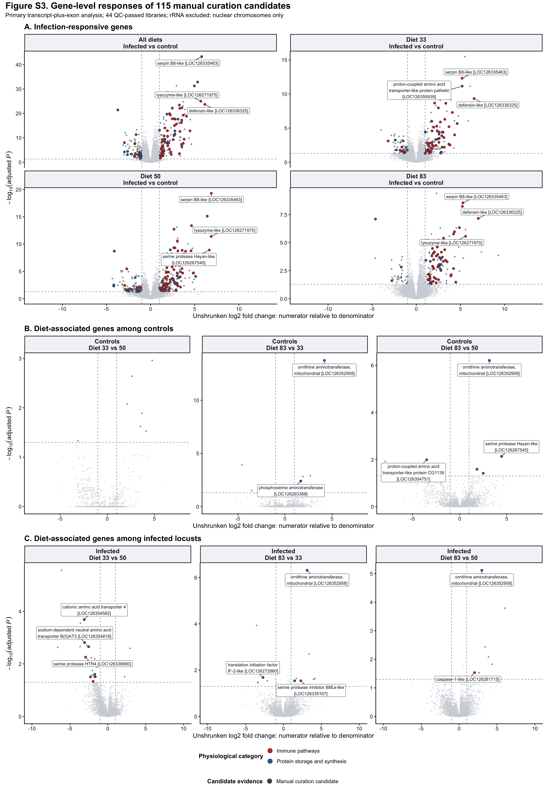
| Version | Author | Date |
|---|---|---|
| 1bc8d16 | Maeva TECHER | 2026-08-11 |
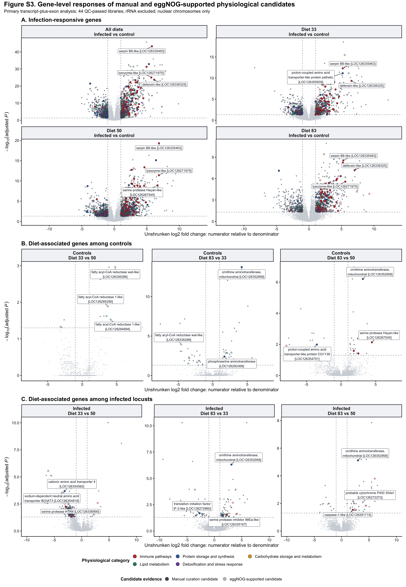
| Version | Author | Date |
|---|---|---|
| 1bc8d16 | Maeva TECHER | 2026-08-11 |
| file | present |
|---|---|
| figureS3_manual_115_candidate_volcanoes.png | TRUE |
| figureS3_manual_115_candidate_volcanoes.svg | TRUE |
| figureS3_manual_115_panelA_infection_volcanoes.png | TRUE |
| figureS3_manual_115_panelA_infection_volcanoes.svg | TRUE |
| figureS3_manual_115_panelB_control_diet_volcanoes.png | TRUE |
| figureS3_manual_115_panelB_control_diet_volcanoes.svg | TRUE |
| figureS3_manual_115_panelC_infected_diet_volcanoes.png | TRUE |
| figureS3_manual_115_panelC_infected_diet_volcanoes.svg | TRUE |
| figureS3_manual_plus_eggnog_366_candidate_volcanoes.png | TRUE |
| figureS3_manual_plus_eggnog_366_candidate_volcanoes.svg | TRUE |
| figureS3_manual_plus_eggnog_366_panelA_infection_volcanoes.png | TRUE |
| figureS3_manual_plus_eggnog_366_panelA_infection_volcanoes.svg | TRUE |
| figureS3_manual_plus_eggnog_366_panelB_control_diet_volcanoes.png | TRUE |
| figureS3_manual_plus_eggnog_366_panelB_control_diet_volcanoes.svg | TRUE |
| figureS3_manual_plus_eggnog_366_panelC_infected_diet_volcanoes.png | TRUE |
| figureS3_manual_plus_eggnog_366_panelC_infected_diet_volcanoes.svg | TRUE |
| figureS3_candidate_evidence_master.csv | TRUE |
| figureS3_candidate_contrast_results.csv | TRUE |
| figureS3_candidate_tier_counts.csv | TRUE |
| figureS3_manual_115_highlighted_DEGs.csv | TRUE |
| figureS3_manual_115_labeled_genes.csv | TRUE |
| figureS3_evidence_tiered_highlighted_DEGs.csv | TRUE |
| figureS3_functionally_highlighted_DEGs.csv | TRUE |
| figureS3_evidence_tiered_labeled_genes.csv | TRUE |
The paper-ready source tables are consolidated in one searchable workbook: download the transcript-plus-exon supplementary tables. It contains the 45-library metadata and mapping-quality record (including the documented exclusion of library 1044), the complete main-chromosome DEG catalogue, GO and KEGG enrichment results with their contributing gene IDs, the physiological-candidate evidence table, and every displayed contrast for those candidates. The primary tier contains 115 manual curation candidates; the lighter tier contains 251 eggNOG-supported candidates that were significant in at least one displayed contrast. Non-significant candidate results are retained in the contrast-level sheet so that absence of a response in a particular comparison remains visible.
The workbook can be regenerated from the current report exports with
scripts/prepare_paper_supplementary_tables.py followed by
scripts/build_paper_supplementary_workbook.mjs.
exports <- list.files(out_dir, full.names = FALSE)
knitr::kable(tibble::tibble(file = exports),
caption = paste("Files written to", out_dir))| file |
|---|
| bracken_host_unmapped_burden_by_sample.csv |
| bracken_host_unmapped_burden_design_tests.csv |
| bracken_host_unmapped_burden_group_summary.csv |
| bracken_host_unmapped_burden_mass_tests.csv |
| bracken_host_unmapped_family_abundance_long.csv |
| bracken_host_unmapped_family_dispersion_test.csv |
| bracken_host_unmapped_family_display_table.csv |
| bracken_host_unmapped_family_pcoa_offset_labels.csv |
| bracken_host_unmapped_family_pcoa_scores.csv |
| bracken_host_unmapped_family_permanova.csv |
| experimental_design_standalone.png |
| experimental_design_standalone.svg |
| figure1_fatbody_pca_centroid_shifts.png |
| figure1_fatbody_pca_centroid_shifts.svg |
| figure1_pca_centroid_shifts.csv |
| figure1_pca_centroids.csv |
| figure1_pca_scores.csv |
| figure2_broad_context_overlap_venn.png |
| figure2_broad_context_overlap_venn.svg |
| figure2_deg_burden_context_phase_venns.png |
| figure2_deg_burden_context_phase_venns.svg |
| figure2_deg_family_candidate_theme_counts_all_categories.csv |
| figure2_deg_family_candidate_theme_counts.csv |
| figure2_deg_family_candidate_theme_gene_table.csv |
| figure2_deg_family_overlap_membership.csv |
| figure2_deg_family_overlap_summary.csv |
| figure2_infection_degs_by_diet_venn.png |
| figure2_infection_degs_by_diet_venn.svg |
| figure2_infection_diet_venn_membership.csv |
| figure2_infection_diet_venn_summary.csv |
| figure2_infection_phase_overlap_membership.csv |
| figure2_infection_phase_overlap_summary.csv |
| figure2_infection_phase_overlap_venn.png |
| figure2_infection_phase_overlap_venn.svg |
| figure2_panel_A_deg_biotype_burden.png |
| figure2_panel_A_deg_biotype_burden.svg |
| figure2_panel_A_deg_biotype_counts.csv |
| figure2_panel_A_exact_contrast_deg_gene_table.csv |
| figure2_panel_B_exact_contrast_upset_membership.csv |
| figure2_panel_B_exact_contrast_upset.png |
| figure2_panel_B_exact_contrast_upset.svg |
| figure2_panel_C_candidate_physiology_phase_composition.png |
| figure2_panel_C_candidate_physiology_phase_composition.svg |
| figure2_rrna_exclusion_audit.csv |
| figure3_expression_cluster_gene_level_GO_KEGG_lollipop_eukaryote_inclusive_title_free.png |
| figure3_expression_cluster_gene_level_GO_KEGG_lollipop_eukaryote_inclusive_title_free.svg |
| figure3_expression_cluster_gene_level_GO_KEGG_lollipop_eukaryote_inclusive.png |
| figure3_expression_cluster_gene_level_GO_KEGG_lollipop_eukaryote_inclusive.svg |
| figure3_expression_cluster_gene_level_GO_KEGG_lollipop_insect_focused.png |
| figure3_expression_cluster_gene_level_GO_KEGG_lollipop_insect_focused.svg |
| figure3_expression_cluster_gene_level_GO_KEGG_lollipop_with_references.png |
| figure3_expression_cluster_gene_level_GO_KEGG_lollipop_with_references.svg |
| figure3_expression_cluster_gene_level_GO_KEGG_pathway_illustration_title_free.png |
| figure3_expression_cluster_gene_level_GO_KEGG_pathway_illustration_title_free.svg |
| figure3_expression_cluster_gene_level_GO_KEGG_pathway_illustration.png |
| figure3_expression_cluster_gene_level_GO_KEGG_pathway_illustration.svg |
| figure3_panel_A_fungal_percentage_two_cluster_heatmap_title_free.png |
| figure3_panel_A_fungal_percentage_two_cluster_heatmap_title_free.svg |
| figure3_panel_A_fungal_percentage_two_cluster_heatmap.png |
| figure3_panel_A_fungal_percentage_two_cluster_heatmap.svg |
| figure3_panel_B_two_cluster_GO_title_free.png |
| figure3_panel_B_two_cluster_GO_title_free.svg |
| figure3_panel_B_two_cluster_GO.png |
| figure3_panel_B_two_cluster_GO.svg |
| figure3_panel_C_two_cluster_KEGG_eukaryote_inclusive_title_free.png |
| figure3_panel_C_two_cluster_KEGG_eukaryote_inclusive_title_free.svg |
| figure3_panel_C_two_cluster_KEGG_eukaryote_inclusive.png |
| figure3_panel_C_two_cluster_KEGG_eukaryote_inclusive.svg |
| figure3_panel_C_two_cluster_KEGG_insect_arthropod_focused.png |
| figure3_panel_C_two_cluster_KEGG_insect_arthropod_focused.svg |
| figure3_panel_C_two_cluster_KEGG_pathway_illustration_title_free.png |
| figure3_panel_C_two_cluster_KEGG_pathway_illustration_title_free.svg |
| figure3_panel_C_two_cluster_KEGG_pathway_illustration.png |
| figure3_panel_C_two_cluster_KEGG_pathway_illustration.svg |
| figure4_curated_target_placement_impact.png |
| figure4_curated_targets_all_scaffolds.png |
| figure4_curated_targets_main_chromosomes.png |
| figure4_curated_targets_non_grasshopper_homology_flags.png |
| figureS1_mapping_quality_exclusion_1044.pdf |
| figureS1_mapping_quality_exclusion_1044.png |
| figureS1_mapping_quality_exclusion_1044.svg |
| figureS2_bracken_host_unmapped_family_composition_large_text_narrow.pdf |
| figureS2_bracken_host_unmapped_family_composition_large_text_narrow.png |
| figureS2_bracken_host_unmapped_family_composition_large_text_narrow.svg |
| figureS2_bracken_host_unmapped_family_composition.pdf |
| figureS2_bracken_host_unmapped_family_composition.png |
| figureS2_bracken_host_unmapped_family_composition.svg |
| figureS3_candidate_contrast_results.csv |
| figureS3_candidate_evidence_master.csv |
| figureS3_candidate_tier_counts.csv |
| figureS3_evidence_tiered_highlighted_DEGs.csv |
| figureS3_evidence_tiered_labeled_genes.csv |
| figureS3_functionally_highlighted_DEGs.csv |
| figureS3_manual_115_candidate_volcanoes.png |
| figureS3_manual_115_candidate_volcanoes.svg |
| figureS3_manual_115_highlighted_DEGs.csv |
| figureS3_manual_115_labeled_genes.csv |
| figureS3_manual_115_panelA_infection_volcanoes.png |
| figureS3_manual_115_panelA_infection_volcanoes.svg |
| figureS3_manual_115_panelB_control_diet_volcanoes.png |
| figureS3_manual_115_panelB_control_diet_volcanoes.svg |
| figureS3_manual_115_panelC_infected_diet_volcanoes.png |
| figureS3_manual_115_panelC_infected_diet_volcanoes.svg |
| figureS3_manual_plus_eggnog_366_candidate_volcanoes.png |
| figureS3_manual_plus_eggnog_366_candidate_volcanoes.svg |
| figureS3_manual_plus_eggnog_366_panelA_infection_volcanoes.png |
| figureS3_manual_plus_eggnog_366_panelA_infection_volcanoes.svg |
| figureS3_manual_plus_eggnog_366_panelB_control_diet_volcanoes.png |
| figureS3_manual_plus_eggnog_366_panelB_control_diet_volcanoes.svg |
| figureS3_manual_plus_eggnog_366_panelC_infected_diet_volcanoes.png |
| figureS3_manual_plus_eggnog_366_panelC_infected_diet_volcanoes.svg |
| main_chromosome_average_infection_results.csv |
| main_chromosome_sample_counts_by_scenario.csv |
| main_chromosome_sample_filter_scenario_results.csv |
writeLines(capture.output(sessionInfo()),
file.path(out_dir, "sessionInfo.txt"))
sessionInfo()R version 4.6.0 (2026-04-24)
Platform: aarch64-apple-darwin23
Running under: macOS Tahoe 26.6.1
Matrix products: default
BLAS: /Library/Frameworks/R.framework/Versions/4.6/Resources/lib/libRblas.0.dylib
LAPACK: /Library/Frameworks/R.framework/Versions/4.6/Resources/lib/libRlapack.dylib; LAPACK version 3.12.1
locale:
[1] C.UTF-8/C.UTF-8/C.UTF-8/C/C.UTF-8/C.UTF-8
time zone: Asia/Tokyo
tzcode source: internal
attached base packages:
[1] stats graphics grDevices utils datasets methods base
other attached packages:
[1] patchwork_1.3.2 ggplot2_4.0.3 workflowr_1.7.2
loaded via a namespace (and not attached):
[1] tidyselect_1.2.1 dplyr_1.2.1
[3] farver_2.1.2 S7_0.2.2
[5] fastmap_1.2.0 promises_1.5.0
[7] digest_0.6.39 lifecycle_1.0.5
[9] processx_3.9.0 magrittr_2.0.5
[11] compiler_4.6.0 rlang_1.2.0
[13] sass_0.4.10 tools_4.6.0
[15] yaml_2.3.12 knitr_1.51
[17] labeling_0.4.3 S4Arrays_1.12.0
[19] DelayedArray_0.38.1 plyr_1.8.9
[21] RColorBrewer_1.1-3 abind_1.4-8
[23] BiocParallel_1.46.0 withr_3.0.2
[25] purrr_1.2.2 BiocGenerics_0.58.0
[27] grid_4.6.0 stats4_4.6.0
[29] git2r_0.36.2 scales_1.4.0
[31] dichromat_2.0-0.1 SummarizedExperiment_1.42.0
[33] cli_3.6.6 UpSetR_1.4.0
[35] rmarkdown_2.31 ragg_1.5.2
[37] generics_0.1.4 otel_0.2.0
[39] rstudioapi_0.18.0 httr_1.4.8
[41] readxl_1.4.5 cachem_1.1.0
[43] stringr_1.6.0 parallel_4.6.0
[45] ggplotify_0.1.3 cellranger_1.1.0
[47] XVector_0.52.0 matrixStats_1.5.0
[49] vctrs_0.7.3 yulab.utils_0.2.4
[51] Matrix_1.7-5 jsonlite_2.0.0
[53] callr_3.7.6 gridGraphics_0.5-1
[55] IRanges_2.46.0 S4Vectors_0.50.1
[57] ggrepel_0.9.8 systemfonts_1.3.2
[59] locfit_1.5-9.12 jquerylib_0.1.4
[61] tidyr_1.3.2 glue_1.8.1
[63] ggVennDiagram_1.5.7 codetools_0.2-20
[65] cowplot_1.2.0 stringi_1.8.7
[67] gtable_0.3.6 later_1.4.8
[69] GenomicRanges_1.64.0 tibble_3.3.1
[71] pillar_1.11.1 rappdirs_0.3.4
[73] htmltools_0.5.9 Seqinfo_1.2.0
[75] R6_2.6.1 textshaping_1.0.5
[77] rprojroot_2.1.1 evaluate_1.0.5
[79] lattice_0.22-9 Biobase_2.72.0
[81] png_0.1-9 httpuv_1.6.17
[83] bslib_0.10.0 Rcpp_1.1.1-1.1
[85] gridExtra_2.3 SparseArray_1.12.2
[87] whisker_0.4.1 DESeq2_1.52.0
[89] xfun_0.57 fs_2.1.0
[91] MatrixGenerics_1.24.0 getPass_0.2-4
[93] pkgconfig_2.0.3
sessionInfo()R version 4.6.0 (2026-04-24)
Platform: aarch64-apple-darwin23
Running under: macOS Tahoe 26.6.1
Matrix products: default
BLAS: /Library/Frameworks/R.framework/Versions/4.6/Resources/lib/libRblas.0.dylib
LAPACK: /Library/Frameworks/R.framework/Versions/4.6/Resources/lib/libRlapack.dylib; LAPACK version 3.12.1
locale:
[1] C.UTF-8/C.UTF-8/C.UTF-8/C/C.UTF-8/C.UTF-8
time zone: Asia/Tokyo
tzcode source: internal
attached base packages:
[1] stats graphics grDevices utils datasets methods base
other attached packages:
[1] patchwork_1.3.2 ggplot2_4.0.3 workflowr_1.7.2
loaded via a namespace (and not attached):
[1] tidyselect_1.2.1 dplyr_1.2.1
[3] farver_2.1.2 S7_0.2.2
[5] fastmap_1.2.0 promises_1.5.0
[7] digest_0.6.39 lifecycle_1.0.5
[9] processx_3.9.0 magrittr_2.0.5
[11] compiler_4.6.0 rlang_1.2.0
[13] sass_0.4.10 tools_4.6.0
[15] yaml_2.3.12 knitr_1.51
[17] labeling_0.4.3 S4Arrays_1.12.0
[19] DelayedArray_0.38.1 plyr_1.8.9
[21] RColorBrewer_1.1-3 abind_1.4-8
[23] BiocParallel_1.46.0 withr_3.0.2
[25] purrr_1.2.2 BiocGenerics_0.58.0
[27] grid_4.6.0 stats4_4.6.0
[29] git2r_0.36.2 scales_1.4.0
[31] dichromat_2.0-0.1 SummarizedExperiment_1.42.0
[33] cli_3.6.6 UpSetR_1.4.0
[35] rmarkdown_2.31 ragg_1.5.2
[37] generics_0.1.4 otel_0.2.0
[39] rstudioapi_0.18.0 httr_1.4.8
[41] readxl_1.4.5 cachem_1.1.0
[43] stringr_1.6.0 parallel_4.6.0
[45] ggplotify_0.1.3 cellranger_1.1.0
[47] XVector_0.52.0 matrixStats_1.5.0
[49] vctrs_0.7.3 yulab.utils_0.2.4
[51] Matrix_1.7-5 jsonlite_2.0.0
[53] callr_3.7.6 gridGraphics_0.5-1
[55] IRanges_2.46.0 S4Vectors_0.50.1
[57] ggrepel_0.9.8 systemfonts_1.3.2
[59] locfit_1.5-9.12 jquerylib_0.1.4
[61] tidyr_1.3.2 glue_1.8.1
[63] ggVennDiagram_1.5.7 codetools_0.2-20
[65] cowplot_1.2.0 stringi_1.8.7
[67] gtable_0.3.6 later_1.4.8
[69] GenomicRanges_1.64.0 tibble_3.3.1
[71] pillar_1.11.1 rappdirs_0.3.4
[73] htmltools_0.5.9 Seqinfo_1.2.0
[75] R6_2.6.1 textshaping_1.0.5
[77] rprojroot_2.1.1 evaluate_1.0.5
[79] lattice_0.22-9 Biobase_2.72.0
[81] png_0.1-9 httpuv_1.6.17
[83] bslib_0.10.0 Rcpp_1.1.1-1.1
[85] gridExtra_2.3 SparseArray_1.12.2
[87] whisker_0.4.1 DESeq2_1.52.0
[89] xfun_0.57 fs_2.1.0
[91] MatrixGenerics_1.24.0 getPass_0.2-4
[93] pkgconfig_2.0.3